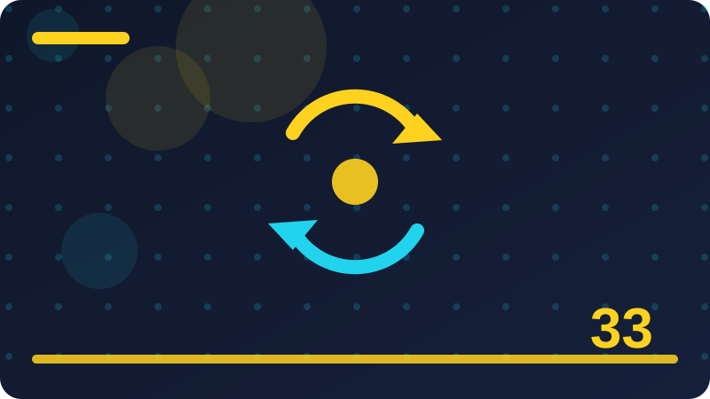

Chapter 33: Security Basics for PHP Programs

Section 1: Thinking Like a Defender
This section explores Thinking Like a Defender in the context of security basics for PHP programs. Understanding Thinking Like a Defender helps a reader follow how a PHP program handles this part of its work. The goal of Thinking Like a Defender is not to add complexity, but to make the program clearer, safer, and easier to change later. Defensive security starts with a simple rule: check everything that arrives from outside the program. Validation means confirming that a value matches what the program expects before it is used anywhere. An allowlist names the values that are permitted, which is usually safer than trying to list every bad value.
When thinking about Thinking Like a Defender, remember that escaping output for the browser turns ordinary text into text that is displayed, rather than interpreted as markup. Prepared statements separate the structure of a database query from the data supplied to it. Placeholders let the database treat supplied data as data, which is the safe way to include user values. Secrets such as passwords and keys do not belong in source code that might be shared or published. Error messages shown to readers should be helpful without revealing file paths, queries, or system details. Least privilege means giving each part of a program only the access it truly needs to do its job.
Session identifiers should be treated carefully, because they represent a signed-in reader for a time. When thinking about Thinking Like a Defender, remember that regenerating a session identifier after sign-in reduces the value of an identifier learned earlier. Cookie flags help the browser handle a cookie more safely, including limiting where it can be sent. A secure connection protects data in transit, and programs should not downgrade readers to an insecure one. Form tokens help a program confirm that a submitted form came from its own page, not from elsewhere. Safe redirects only send readers to destinations the program has approved in advance.
File paths built from outside input need strict checks, so readers cannot reach files they should not see. Keeping uploaded files outside public folders adds a layer of control over how they are served. When thinking about Thinking Like a Defender, remember that safe password storage uses a dedicated hashing function, never a plain copy of the password itself. Logs are useful for finding problems, but they must never record passwords, tokens, or private data. Keeping dependencies updated reduces the chance that a known weakness stays in a program for long. File permissions should allow reading and writing only where the program genuinely needs it.
Configuration files belong outside the public folder, so they cannot be reached directly by a browser. Safe defaults mean a new feature starts restricted, and access is opened only where it is needed. Checking lengths and ranges stops oversized or out-of-range values from causing surprising behaviour. When thinking about Thinking Like a Defender, remember that expecting only known values makes code simpler to reason about and harder to misuse by accident.
<?php
$text = $_POST['comment'] ?? '';
echo htmlspecialchars($text, ENT_QUOTES, 'UTF-8');
?>Check: In your own words, how would you explain Thinking Like a Defender and when would you use it in a PHP program?
Section 2: Trust No Outside Input
This section explores Trust No Outside Input in the context of security basics for PHP programs. Understanding Trust No Outside Input helps a reader follow how a PHP program handles this part of its work. The goal of Trust No Outside Input is not to add complexity, but to make the program clearer, safer, and easier to change later. Escaping output for the browser turns ordinary text into text that is displayed, rather than interpreted as markup. Prepared statements separate the structure of a database query from the data supplied to it. Placeholders let the database treat supplied data as data, which is the safe way to include user values.
When thinking about Trust No Outside Input, remember that secrets such as passwords and keys do not belong in source code that might be shared or published. Error messages shown to readers should be helpful without revealing file paths, queries, or system details. Least privilege means giving each part of a program only the access it truly needs to do its job. Session identifiers should be treated carefully, because they represent a signed-in reader for a time. Regenerating a session identifier after sign-in reduces the value of an identifier learned earlier. Cookie flags help the browser handle a cookie more safely, including limiting where it can be sent.
A secure connection protects data in transit, and programs should not downgrade readers to an insecure one. When thinking about Trust No Outside Input, remember that form tokens help a program confirm that a submitted form came from its own page, not from elsewhere. Safe redirects only send readers to destinations the program has approved in advance. File paths built from outside input need strict checks, so readers cannot reach files they should not see. Keeping uploaded files outside public folders adds a layer of control over how they are served. Safe password storage uses a dedicated hashing function, never a plain copy of the password itself.
Logs are useful for finding problems, but they must never record passwords, tokens, or private data. Keeping dependencies updated reduces the chance that a known weakness stays in a program for long. When thinking about Trust No Outside Input, remember that file permissions should allow reading and writing only where the program genuinely needs it. Configuration files belong outside the public folder, so they cannot be reached directly by a browser. Safe defaults mean a new feature starts restricted, and access is opened only where it is needed. Checking lengths and ranges stops oversized or out-of-range values from causing surprising behaviour.
Expecting only known values makes code simpler to reason about and harder to misuse by accident. Defensive security starts with a simple rule: check everything that arrives from outside the program. Validation means confirming that a value matches what the program expects before it is used anywhere. When thinking about Trust No Outside Input, remember that an allowlist names the values that are permitted, which is usually safer than trying to list every bad value.
<?php
$stmt = $pdo->prepare('SELECT id, title FROM notes WHERE owner_id = :owner');
$stmt->execute(['owner' => $ownerId]);
$rows = $stmt->fetchAll();
?>Check: What is the key idea behind Trust No Outside Input, and what would you check before relying on it?
Section 3: Validation in Plain Words
This section explores Validation in Plain Words in the context of security basics for PHP programs. Understanding Validation in Plain Words helps a reader follow how a PHP program handles this part of its work. The goal of Validation in Plain Words is not to add complexity, but to make the program clearer, safer, and easier to change later. Secrets such as passwords and keys do not belong in source code that might be shared or published. Error messages shown to readers should be helpful without revealing file paths, queries, or system details. Least privilege means giving each part of a program only the access it truly needs to do its job.
When thinking about Validation in Plain Words, remember that session identifiers should be treated carefully, because they represent a signed-in reader for a time. Regenerating a session identifier after sign-in reduces the value of an identifier learned earlier. Cookie flags help the browser handle a cookie more safely, including limiting where it can be sent. A secure connection protects data in transit, and programs should not downgrade readers to an insecure one. Form tokens help a program confirm that a submitted form came from its own page, not from elsewhere. Safe redirects only send readers to destinations the program has approved in advance.
File paths built from outside input need strict checks, so readers cannot reach files they should not see. When thinking about Validation in Plain Words, remember that keeping uploaded files outside public folders adds a layer of control over how they are served. Safe password storage uses a dedicated hashing function, never a plain copy of the password itself. Logs are useful for finding problems, but they must never record passwords, tokens, or private data. Keeping dependencies updated reduces the chance that a known weakness stays in a program for long. File permissions should allow reading and writing only where the program genuinely needs it.
Configuration files belong outside the public folder, so they cannot be reached directly by a browser. Safe defaults mean a new feature starts restricted, and access is opened only where it is needed. When thinking about Validation in Plain Words, remember that checking lengths and ranges stops oversized or out-of-range values from causing surprising behaviour. Expecting only known values makes code simpler to reason about and harder to misuse by accident. Defensive security starts with a simple rule: check everything that arrives from outside the program. Validation means confirming that a value matches what the program expects before it is used anywhere.
An allowlist names the values that are permitted, which is usually safer than trying to list every bad value. Escaping output for the browser turns ordinary text into text that is displayed, rather than interpreted as markup. Prepared statements separate the structure of a database query from the data supplied to it. When thinking about Validation in Plain Words, remember that placeholders let the database treat supplied data as data, which is the safe way to include user values.
<?php
if (!hash_equals($expectedToken, $submittedToken)) {
echo 'This form could not be verified. Please try again.';
exit;
}
?>Check: Describe Validation in Plain Words to a beginner, and give one example where it makes a program safer or clearer.
Section 4: Allowlists Versus Denylists
This section explores Allowlists Versus Denylists in the context of security basics for PHP programs. Understanding Allowlists Versus Denylists helps a reader follow how a PHP program handles this part of its work. The goal of Allowlists Versus Denylists is not to add complexity, but to make the program clearer, safer, and easier to change later. Session identifiers should be treated carefully, because they represent a signed-in reader for a time. Regenerating a session identifier after sign-in reduces the value of an identifier learned earlier. Cookie flags help the browser handle a cookie more safely, including limiting where it can be sent.
When thinking about Allowlists Versus Denylists, remember that a secure connection protects data in transit, and programs should not downgrade readers to an insecure one. Form tokens help a program confirm that a submitted form came from its own page, not from elsewhere. Safe redirects only send readers to destinations the program has approved in advance. File paths built from outside input need strict checks, so readers cannot reach files they should not see. Keeping uploaded files outside public folders adds a layer of control over how they are served. Safe password storage uses a dedicated hashing function, never a plain copy of the password itself.
Logs are useful for finding problems, but they must never record passwords, tokens, or private data. When thinking about Allowlists Versus Denylists, remember that keeping dependencies updated reduces the chance that a known weakness stays in a program for long. File permissions should allow reading and writing only where the program genuinely needs it. Configuration files belong outside the public folder, so they cannot be reached directly by a browser. Safe defaults mean a new feature starts restricted, and access is opened only where it is needed. Checking lengths and ranges stops oversized or out-of-range values from causing surprising behaviour.
Expecting only known values makes code simpler to reason about and harder to misuse by accident. Defensive security starts with a simple rule: check everything that arrives from outside the program. When thinking about Allowlists Versus Denylists, remember that validation means confirming that a value matches what the program expects before it is used anywhere. An allowlist names the values that are permitted, which is usually safer than trying to list every bad value. Escaping output for the browser turns ordinary text into text that is displayed, rather than interpreted as markup. Prepared statements separate the structure of a database query from the data supplied to it.
Placeholders let the database treat supplied data as data, which is the safe way to include user values. Secrets such as passwords and keys do not belong in source code that might be shared or published. Error messages shown to readers should be helpful without revealing file paths, queries, or system details. When thinking about Allowlists Versus Denylists, remember that least privilege means giving each part of a program only the access it truly needs to do its job. Session identifiers should be treated carefully, because they represent a signed-in reader for a time.
<?php
$allowed = ['/home.php', '/notes.php'];
$target = $_POST['next'] ?? '/home.php';
if (!in_array($target, $allowed, true)) {
$target = '/home.php';
}
header('Location: ' . $target);
exit;
?>Check: Why does Allowlists Versus Denylists matter in practice, and what mistake should a careful developer avoid here?
Section 5: Escaping Output for the Browser
This section explores Escaping Output for the Browser in the context of security basics for PHP programs. Understanding Escaping Output for the Browser helps a reader follow how a PHP program handles this part of its work. The goal of Escaping Output for the Browser is not to add complexity, but to make the program clearer, safer, and easier to change later. A secure connection protects data in transit, and programs should not downgrade readers to an insecure one. Form tokens help a program confirm that a submitted form came from its own page, not from elsewhere. Safe redirects only send readers to destinations the program has approved in advance.
When thinking about Escaping Output for the Browser, remember that file paths built from outside input need strict checks, so readers cannot reach files they should not see. Keeping uploaded files outside public folders adds a layer of control over how they are served. Safe password storage uses a dedicated hashing function, never a plain copy of the password itself. Logs are useful for finding problems, but they must never record passwords, tokens, or private data. Keeping dependencies updated reduces the chance that a known weakness stays in a program for long. File permissions should allow reading and writing only where the program genuinely needs it.
Configuration files belong outside the public folder, so they cannot be reached directly by a browser. When thinking about Escaping Output for the Browser, remember that safe defaults mean a new feature starts restricted, and access is opened only where it is needed. Checking lengths and ranges stops oversized or out-of-range values from causing surprising behaviour. Expecting only known values makes code simpler to reason about and harder to misuse by accident. Defensive security starts with a simple rule: check everything that arrives from outside the program. Validation means confirming that a value matches what the program expects before it is used anywhere.
An allowlist names the values that are permitted, which is usually safer than trying to list every bad value. Escaping output for the browser turns ordinary text into text that is displayed, rather than interpreted as markup. When thinking about Escaping Output for the Browser, remember that prepared statements separate the structure of a database query from the data supplied to it. Placeholders let the database treat supplied data as data, which is the safe way to include user values. Secrets such as passwords and keys do not belong in source code that might be shared or published. Error messages shown to readers should be helpful without revealing file paths, queries, or system details.
Least privilege means giving each part of a program only the access it truly needs to do its job. Session identifiers should be treated carefully, because they represent a signed-in reader for a time. Regenerating a session identifier after sign-in reduces the value of an identifier learned earlier. When thinking about Escaping Output for the Browser, remember that cookie flags help the browser handle a cookie more safely, including limiting where it can be sent.
<?php
session_start();
session_regenerate_id(true);
$_SESSION['user_id'] = $userId;
?>Check: How would you test whether you have applied Escaping Output for the Browser correctly in a small PHP program?
Section 6: Prepared Statements in Plain Words
This section explores Prepared Statements in Plain Words in the context of security basics for PHP programs. Understanding Prepared Statements in Plain Words helps a reader follow how a PHP program handles this part of its work. The goal of Prepared Statements in Plain Words is not to add complexity, but to make the program clearer, safer, and easier to change later. File paths built from outside input need strict checks, so readers cannot reach files they should not see. Keeping uploaded files outside public folders adds a layer of control over how they are served. Safe password storage uses a dedicated hashing function, never a plain copy of the password itself.
When thinking about Prepared Statements in Plain Words, remember that logs are useful for finding problems, but they must never record passwords, tokens, or private data. Keeping dependencies updated reduces the chance that a known weakness stays in a program for long. File permissions should allow reading and writing only where the program genuinely needs it. Configuration files belong outside the public folder, so they cannot be reached directly by a browser. Safe defaults mean a new feature starts restricted, and access is opened only where it is needed. Checking lengths and ranges stops oversized or out-of-range values from causing surprising behaviour.
Expecting only known values makes code simpler to reason about and harder to misuse by accident. When thinking about Prepared Statements in Plain Words, remember that defensive security starts with a simple rule: check everything that arrives from outside the program. Validation means confirming that a value matches what the program expects before it is used anywhere. An allowlist names the values that are permitted, which is usually safer than trying to list every bad value. Escaping output for the browser turns ordinary text into text that is displayed, rather than interpreted as markup. Prepared statements separate the structure of a database query from the data supplied to it.
Placeholders let the database treat supplied data as data, which is the safe way to include user values. Secrets such as passwords and keys do not belong in source code that might be shared or published. When thinking about Prepared Statements in Plain Words, remember that error messages shown to readers should be helpful without revealing file paths, queries, or system details. Least privilege means giving each part of a program only the access it truly needs to do its job. Session identifiers should be treated carefully, because they represent a signed-in reader for a time. Regenerating a session identifier after sign-in reduces the value of an identifier learned earlier.
Cookie flags help the browser handle a cookie more safely, including limiting where it can be sent. A secure connection protects data in transit, and programs should not downgrade readers to an insecure one. Form tokens help a program confirm that a submitted form came from its own page, not from elsewhere. When thinking about Prepared Statements in Plain Words, remember that safe redirects only send readers to destinations the program has approved in advance.
<?php
$text = $_POST['comment'] ?? '';
echo htmlspecialchars($text, ENT_QUOTES, 'UTF-8');
?>Check: In your own words, how would you explain Prepared Statements in Plain Words and when would you use it in a PHP program?
Section 7: Why Placeholders Help
This section explores Why Placeholders Help in the context of security basics for PHP programs. Understanding Why Placeholders Help helps a reader follow how a PHP program handles this part of its work. The goal of Why Placeholders Help is not to add complexity, but to make the program clearer, safer, and easier to change later. Logs are useful for finding problems, but they must never record passwords, tokens, or private data. Keeping dependencies updated reduces the chance that a known weakness stays in a program for long. File permissions should allow reading and writing only where the program genuinely needs it.
When thinking about Why Placeholders Help, remember that configuration files belong outside the public folder, so they cannot be reached directly by a browser. Safe defaults mean a new feature starts restricted, and access is opened only where it is needed. Checking lengths and ranges stops oversized or out-of-range values from causing surprising behaviour. Expecting only known values makes code simpler to reason about and harder to misuse by accident. Defensive security starts with a simple rule: check everything that arrives from outside the program. Validation means confirming that a value matches what the program expects before it is used anywhere.
An allowlist names the values that are permitted, which is usually safer than trying to list every bad value. When thinking about Why Placeholders Help, remember that escaping output for the browser turns ordinary text into text that is displayed, rather than interpreted as markup. Prepared statements separate the structure of a database query from the data supplied to it. Placeholders let the database treat supplied data as data, which is the safe way to include user values. Secrets such as passwords and keys do not belong in source code that might be shared or published. Error messages shown to readers should be helpful without revealing file paths, queries, or system details.
Least privilege means giving each part of a program only the access it truly needs to do its job. Session identifiers should be treated carefully, because they represent a signed-in reader for a time. When thinking about Why Placeholders Help, remember that regenerating a session identifier after sign-in reduces the value of an identifier learned earlier. Cookie flags help the browser handle a cookie more safely, including limiting where it can be sent. A secure connection protects data in transit, and programs should not downgrade readers to an insecure one. Form tokens help a program confirm that a submitted form came from its own page, not from elsewhere.
Safe redirects only send readers to destinations the program has approved in advance. File paths built from outside input need strict checks, so readers cannot reach files they should not see. Keeping uploaded files outside public folders adds a layer of control over how they are served. When thinking about Why Placeholders Help, remember that safe password storage uses a dedicated hashing function, never a plain copy of the password itself. Logs are useful for finding problems, but they must never record passwords, tokens, or private data.
<?php
$stmt = $pdo->prepare('SELECT id, title FROM notes WHERE owner_id = :owner');
$stmt->execute(['owner' => $ownerId]);
$rows = $stmt->fetchAll();
?>Check: What is the key idea behind Why Placeholders Help, and what would you check before relying on it?
Section 8: Keeping Secrets Out of Code
This section explores Keeping Secrets Out of Code in the context of security basics for PHP programs. Understanding Keeping Secrets Out of Code helps a reader follow how a PHP program handles this part of its work. The goal of Keeping Secrets Out of Code is not to add complexity, but to make the program clearer, safer, and easier to change later. Configuration files belong outside the public folder, so they cannot be reached directly by a browser. Safe defaults mean a new feature starts restricted, and access is opened only where it is needed. Checking lengths and ranges stops oversized or out-of-range values from causing surprising behaviour.
When thinking about Keeping Secrets Out of Code, remember that expecting only known values makes code simpler to reason about and harder to misuse by accident. Defensive security starts with a simple rule: check everything that arrives from outside the program. Validation means confirming that a value matches what the program expects before it is used anywhere. An allowlist names the values that are permitted, which is usually safer than trying to list every bad value. Escaping output for the browser turns ordinary text into text that is displayed, rather than interpreted as markup. Prepared statements separate the structure of a database query from the data supplied to it.
Placeholders let the database treat supplied data as data, which is the safe way to include user values. When thinking about Keeping Secrets Out of Code, remember that secrets such as passwords and keys do not belong in source code that might be shared or published. Error messages shown to readers should be helpful without revealing file paths, queries, or system details. Least privilege means giving each part of a program only the access it truly needs to do its job. Session identifiers should be treated carefully, because they represent a signed-in reader for a time. Regenerating a session identifier after sign-in reduces the value of an identifier learned earlier.
Cookie flags help the browser handle a cookie more safely, including limiting where it can be sent. A secure connection protects data in transit, and programs should not downgrade readers to an insecure one. When thinking about Keeping Secrets Out of Code, remember that form tokens help a program confirm that a submitted form came from its own page, not from elsewhere. Safe redirects only send readers to destinations the program has approved in advance. File paths built from outside input need strict checks, so readers cannot reach files they should not see. Keeping uploaded files outside public folders adds a layer of control over how they are served.
Safe password storage uses a dedicated hashing function, never a plain copy of the password itself. Logs are useful for finding problems, but they must never record passwords, tokens, or private data. Keeping dependencies updated reduces the chance that a known weakness stays in a program for long. When thinking about Keeping Secrets Out of Code, remember that file permissions should allow reading and writing only where the program genuinely needs it.
<?php
if (!hash_equals($expectedToken, $submittedToken)) {
echo 'This form could not be verified. Please try again.';
exit;
}
?>Check: Describe Keeping Secrets Out of Code to a beginner, and give one example where it makes a program safer or clearer.
Section 9: Safe Error Messages
This section explores Safe Error Messages in the context of security basics for PHP programs. Understanding Safe Error Messages helps a reader follow how a PHP program handles this part of its work. The goal of Safe Error Messages is not to add complexity, but to make the program clearer, safer, and easier to change later. Expecting only known values makes code simpler to reason about and harder to misuse by accident. Defensive security starts with a simple rule: check everything that arrives from outside the program. Validation means confirming that a value matches what the program expects before it is used anywhere.
When thinking about Safe Error Messages, remember that an allowlist names the values that are permitted, which is usually safer than trying to list every bad value. Escaping output for the browser turns ordinary text into text that is displayed, rather than interpreted as markup. Prepared statements separate the structure of a database query from the data supplied to it. Placeholders let the database treat supplied data as data, which is the safe way to include user values. Secrets such as passwords and keys do not belong in source code that might be shared or published. Error messages shown to readers should be helpful without revealing file paths, queries, or system details.
Least privilege means giving each part of a program only the access it truly needs to do its job. When thinking about Safe Error Messages, remember that session identifiers should be treated carefully, because they represent a signed-in reader for a time. Regenerating a session identifier after sign-in reduces the value of an identifier learned earlier. Cookie flags help the browser handle a cookie more safely, including limiting where it can be sent. A secure connection protects data in transit, and programs should not downgrade readers to an insecure one. Form tokens help a program confirm that a submitted form came from its own page, not from elsewhere.
Safe redirects only send readers to destinations the program has approved in advance. File paths built from outside input need strict checks, so readers cannot reach files they should not see. When thinking about Safe Error Messages, remember that keeping uploaded files outside public folders adds a layer of control over how they are served. Safe password storage uses a dedicated hashing function, never a plain copy of the password itself. Logs are useful for finding problems, but they must never record passwords, tokens, or private data. Keeping dependencies updated reduces the chance that a known weakness stays in a program for long.
File permissions should allow reading and writing only where the program genuinely needs it. Configuration files belong outside the public folder, so they cannot be reached directly by a browser. Safe defaults mean a new feature starts restricted, and access is opened only where it is needed. When thinking about Safe Error Messages, remember that checking lengths and ranges stops oversized or out-of-range values from causing surprising behaviour. Expecting only known values makes code simpler to reason about and harder to misuse by accident.
<?php
$allowed = ['/home.php', '/notes.php'];
$target = $_POST['next'] ?? '/home.php';
if (!in_array($target, $allowed, true)) {
$target = '/home.php';
}
header('Location: ' . $target);
exit;
?>Check: Why does Safe Error Messages matter in practice, and what mistake should a careful developer avoid here?
Section 10: Least Privilege in Plain Words
This section explores Least Privilege in Plain Words in the context of security basics for PHP programs. Understanding Least Privilege in Plain Words helps a reader follow how a PHP program handles this part of its work. The goal of Least Privilege in Plain Words is not to add complexity, but to make the program clearer, safer, and easier to change later. An allowlist names the values that are permitted, which is usually safer than trying to list every bad value. Escaping output for the browser turns ordinary text into text that is displayed, rather than interpreted as markup. Prepared statements separate the structure of a database query from the data supplied to it.
When thinking about Least Privilege in Plain Words, remember that placeholders let the database treat supplied data as data, which is the safe way to include user values. Secrets such as passwords and keys do not belong in source code that might be shared or published. Error messages shown to readers should be helpful without revealing file paths, queries, or system details. Least privilege means giving each part of a program only the access it truly needs to do its job. Session identifiers should be treated carefully, because they represent a signed-in reader for a time. Regenerating a session identifier after sign-in reduces the value of an identifier learned earlier.
Cookie flags help the browser handle a cookie more safely, including limiting where it can be sent. When thinking about Least Privilege in Plain Words, remember that a secure connection protects data in transit, and programs should not downgrade readers to an insecure one. Form tokens help a program confirm that a submitted form came from its own page, not from elsewhere. Safe redirects only send readers to destinations the program has approved in advance. File paths built from outside input need strict checks, so readers cannot reach files they should not see. Keeping uploaded files outside public folders adds a layer of control over how they are served.
Safe password storage uses a dedicated hashing function, never a plain copy of the password itself. Logs are useful for finding problems, but they must never record passwords, tokens, or private data. When thinking about Least Privilege in Plain Words, remember that keeping dependencies updated reduces the chance that a known weakness stays in a program for long. File permissions should allow reading and writing only where the program genuinely needs it. Configuration files belong outside the public folder, so they cannot be reached directly by a browser. Safe defaults mean a new feature starts restricted, and access is opened only where it is needed.
Checking lengths and ranges stops oversized or out-of-range values from causing surprising behaviour. Expecting only known values makes code simpler to reason about and harder to misuse by accident. Defensive security starts with a simple rule: check everything that arrives from outside the program. When thinking about Least Privilege in Plain Words, remember that validation means confirming that a value matches what the program expects before it is used anywhere.
<?php
session_start();
session_regenerate_id(true);
$_SESSION['user_id'] = $userId;
?>Check: How would you test whether you have applied Least Privilege in Plain Words correctly in a small PHP program?
Section 11: Session Safety Basics
This section explores Session Safety Basics in the context of security basics for PHP programs. Understanding Session Safety Basics helps a reader follow how a PHP program handles this part of its work. The goal of Session Safety Basics is not to add complexity, but to make the program clearer, safer, and easier to change later. Placeholders let the database treat supplied data as data, which is the safe way to include user values. Secrets such as passwords and keys do not belong in source code that might be shared or published. Error messages shown to readers should be helpful without revealing file paths, queries, or system details.
When thinking about Session Safety Basics, remember that least privilege means giving each part of a program only the access it truly needs to do its job. Session identifiers should be treated carefully, because they represent a signed-in reader for a time. Regenerating a session identifier after sign-in reduces the value of an identifier learned earlier. Cookie flags help the browser handle a cookie more safely, including limiting where it can be sent. A secure connection protects data in transit, and programs should not downgrade readers to an insecure one. Form tokens help a program confirm that a submitted form came from its own page, not from elsewhere.
Safe redirects only send readers to destinations the program has approved in advance. When thinking about Session Safety Basics, remember that file paths built from outside input need strict checks, so readers cannot reach files they should not see. Keeping uploaded files outside public folders adds a layer of control over how they are served. Safe password storage uses a dedicated hashing function, never a plain copy of the password itself. Logs are useful for finding problems, but they must never record passwords, tokens, or private data. Keeping dependencies updated reduces the chance that a known weakness stays in a program for long.
File permissions should allow reading and writing only where the program genuinely needs it. Configuration files belong outside the public folder, so they cannot be reached directly by a browser. When thinking about Session Safety Basics, remember that safe defaults mean a new feature starts restricted, and access is opened only where it is needed. Checking lengths and ranges stops oversized or out-of-range values from causing surprising behaviour. Expecting only known values makes code simpler to reason about and harder to misuse by accident. Defensive security starts with a simple rule: check everything that arrives from outside the program.
Validation means confirming that a value matches what the program expects before it is used anywhere. An allowlist names the values that are permitted, which is usually safer than trying to list every bad value. Escaping output for the browser turns ordinary text into text that is displayed, rather than interpreted as markup. When thinking about Session Safety Basics, remember that prepared statements separate the structure of a database query from the data supplied to it. Placeholders let the database treat supplied data as data, which is the safe way to include user values.
<?php
$text = $_POST['comment'] ?? '';
echo htmlspecialchars($text, ENT_QUOTES, 'UTF-8');
?>Check: In your own words, how would you explain Session Safety Basics and when would you use it in a PHP program?
Section 12: Regenerating Session Identifiers
This section explores Regenerating Session Identifiers in the context of security basics for PHP programs. Understanding Regenerating Session Identifiers helps a reader follow how a PHP program handles this part of its work. The goal of Regenerating Session Identifiers is not to add complexity, but to make the program clearer, safer, and easier to change later. Least privilege means giving each part of a program only the access it truly needs to do its job. Session identifiers should be treated carefully, because they represent a signed-in reader for a time. Regenerating a session identifier after sign-in reduces the value of an identifier learned earlier.
When thinking about Regenerating Session Identifiers, remember that cookie flags help the browser handle a cookie more safely, including limiting where it can be sent. A secure connection protects data in transit, and programs should not downgrade readers to an insecure one. Form tokens help a program confirm that a submitted form came from its own page, not from elsewhere. Safe redirects only send readers to destinations the program has approved in advance. File paths built from outside input need strict checks, so readers cannot reach files they should not see. Keeping uploaded files outside public folders adds a layer of control over how they are served.
Safe password storage uses a dedicated hashing function, never a plain copy of the password itself. When thinking about Regenerating Session Identifiers, remember that logs are useful for finding problems, but they must never record passwords, tokens, or private data. Keeping dependencies updated reduces the chance that a known weakness stays in a program for long. File permissions should allow reading and writing only where the program genuinely needs it. Configuration files belong outside the public folder, so they cannot be reached directly by a browser. Safe defaults mean a new feature starts restricted, and access is opened only where it is needed.
Checking lengths and ranges stops oversized or out-of-range values from causing surprising behaviour. Expecting only known values makes code simpler to reason about and harder to misuse by accident. When thinking about Regenerating Session Identifiers, remember that defensive security starts with a simple rule: check everything that arrives from outside the program. Validation means confirming that a value matches what the program expects before it is used anywhere. An allowlist names the values that are permitted, which is usually safer than trying to list every bad value. Escaping output for the browser turns ordinary text into text that is displayed, rather than interpreted as markup.
Prepared statements separate the structure of a database query from the data supplied to it. Placeholders let the database treat supplied data as data, which is the safe way to include user values. Secrets such as passwords and keys do not belong in source code that might be shared or published. When thinking about Regenerating Session Identifiers, remember that error messages shown to readers should be helpful without revealing file paths, queries, or system details. Least privilege means giving each part of a program only the access it truly needs to do its job.
<?php
$stmt = $pdo->prepare('SELECT id, title FROM notes WHERE owner_id = :owner');
$stmt->execute(['owner' => $ownerId]);
$rows = $stmt->fetchAll();
?>Check: What is the key idea behind Regenerating Session Identifiers, and what would you check before relying on it?
Section 13: Cookie Flags in Plain Words
This section explores Cookie Flags in Plain Words in the context of security basics for PHP programs. Understanding Cookie Flags in Plain Words helps a reader follow how a PHP program handles this part of its work. The goal of Cookie Flags in Plain Words is not to add complexity, but to make the program clearer, safer, and easier to change later. Cookie flags help the browser handle a cookie more safely, including limiting where it can be sent. A secure connection protects data in transit, and programs should not downgrade readers to an insecure one. Form tokens help a program confirm that a submitted form came from its own page, not from elsewhere.
When thinking about Cookie Flags in Plain Words, remember that safe redirects only send readers to destinations the program has approved in advance. File paths built from outside input need strict checks, so readers cannot reach files they should not see. Keeping uploaded files outside public folders adds a layer of control over how they are served. Safe password storage uses a dedicated hashing function, never a plain copy of the password itself. Logs are useful for finding problems, but they must never record passwords, tokens, or private data. Keeping dependencies updated reduces the chance that a known weakness stays in a program for long.
File permissions should allow reading and writing only where the program genuinely needs it. When thinking about Cookie Flags in Plain Words, remember that configuration files belong outside the public folder, so they cannot be reached directly by a browser. Safe defaults mean a new feature starts restricted, and access is opened only where it is needed. Checking lengths and ranges stops oversized or out-of-range values from causing surprising behaviour. Expecting only known values makes code simpler to reason about and harder to misuse by accident. Defensive security starts with a simple rule: check everything that arrives from outside the program.
Validation means confirming that a value matches what the program expects before it is used anywhere. An allowlist names the values that are permitted, which is usually safer than trying to list every bad value. When thinking about Cookie Flags in Plain Words, remember that escaping output for the browser turns ordinary text into text that is displayed, rather than interpreted as markup. Prepared statements separate the structure of a database query from the data supplied to it. Placeholders let the database treat supplied data as data, which is the safe way to include user values. Secrets such as passwords and keys do not belong in source code that might be shared or published.
Error messages shown to readers should be helpful without revealing file paths, queries, or system details. Least privilege means giving each part of a program only the access it truly needs to do its job. Session identifiers should be treated carefully, because they represent a signed-in reader for a time. When thinking about Cookie Flags in Plain Words, remember that regenerating a session identifier after sign-in reduces the value of an identifier learned earlier.
<?php
if (!hash_equals($expectedToken, $submittedToken)) {
echo 'This form could not be verified. Please try again.';
exit;
}
?>Check: Describe Cookie Flags in Plain Words to a beginner, and give one example where it makes a program safer or clearer.
Section 14: HTTPS Concepts for Developers
This section explores HTTPS Concepts for Developers in the context of security basics for PHP programs. Understanding HTTPS Concepts for Developers helps a reader follow how a PHP program handles this part of its work. The goal of HTTPS Concepts for Developers is not to add complexity, but to make the program clearer, safer, and easier to change later. Safe redirects only send readers to destinations the program has approved in advance. File paths built from outside input need strict checks, so readers cannot reach files they should not see. Keeping uploaded files outside public folders adds a layer of control over how they are served.
When thinking about HTTPS Concepts for Developers, remember that safe password storage uses a dedicated hashing function, never a plain copy of the password itself. Logs are useful for finding problems, but they must never record passwords, tokens, or private data. Keeping dependencies updated reduces the chance that a known weakness stays in a program for long. File permissions should allow reading and writing only where the program genuinely needs it. Configuration files belong outside the public folder, so they cannot be reached directly by a browser. Safe defaults mean a new feature starts restricted, and access is opened only where it is needed.
Checking lengths and ranges stops oversized or out-of-range values from causing surprising behaviour. When thinking about HTTPS Concepts for Developers, remember that expecting only known values makes code simpler to reason about and harder to misuse by accident. Defensive security starts with a simple rule: check everything that arrives from outside the program. Validation means confirming that a value matches what the program expects before it is used anywhere. An allowlist names the values that are permitted, which is usually safer than trying to list every bad value. Escaping output for the browser turns ordinary text into text that is displayed, rather than interpreted as markup.
Prepared statements separate the structure of a database query from the data supplied to it. Placeholders let the database treat supplied data as data, which is the safe way to include user values. When thinking about HTTPS Concepts for Developers, remember that secrets such as passwords and keys do not belong in source code that might be shared or published. Error messages shown to readers should be helpful without revealing file paths, queries, or system details. Least privilege means giving each part of a program only the access it truly needs to do its job. Session identifiers should be treated carefully, because they represent a signed-in reader for a time.
Regenerating a session identifier after sign-in reduces the value of an identifier learned earlier. Cookie flags help the browser handle a cookie more safely, including limiting where it can be sent. A secure connection protects data in transit, and programs should not downgrade readers to an insecure one. When thinking about HTTPS Concepts for Developers, remember that form tokens help a program confirm that a submitted form came from its own page, not from elsewhere.
<?php
$allowed = ['/home.php', '/notes.php'];
$target = $_POST['next'] ?? '/home.php';
if (!in_array($target, $allowed, true)) {
$target = '/home.php';
}
header('Location: ' . $target);
exit;
?>Check: Why does HTTPS Concepts for Developers matter in practice, and what mistake should a careful developer avoid here?
Section 15: Cross-Site Request Concepts
This section explores Cross-Site Request Concepts in the context of security basics for PHP programs. Understanding Cross-Site Request Concepts helps a reader follow how a PHP program handles this part of its work. The goal of Cross-Site Request Concepts is not to add complexity, but to make the program clearer, safer, and easier to change later. Safe password storage uses a dedicated hashing function, never a plain copy of the password itself. Logs are useful for finding problems, but they must never record passwords, tokens, or private data. Keeping dependencies updated reduces the chance that a known weakness stays in a program for long.
When thinking about Cross-Site Request Concepts, remember that file permissions should allow reading and writing only where the program genuinely needs it. Configuration files belong outside the public folder, so they cannot be reached directly by a browser. Safe defaults mean a new feature starts restricted, and access is opened only where it is needed. Checking lengths and ranges stops oversized or out-of-range values from causing surprising behaviour. Expecting only known values makes code simpler to reason about and harder to misuse by accident. Defensive security starts with a simple rule: check everything that arrives from outside the program.
Validation means confirming that a value matches what the program expects before it is used anywhere. When thinking about Cross-Site Request Concepts, remember that an allowlist names the values that are permitted, which is usually safer than trying to list every bad value. Escaping output for the browser turns ordinary text into text that is displayed, rather than interpreted as markup. Prepared statements separate the structure of a database query from the data supplied to it. Placeholders let the database treat supplied data as data, which is the safe way to include user values. Secrets such as passwords and keys do not belong in source code that might be shared or published.
Error messages shown to readers should be helpful without revealing file paths, queries, or system details. Least privilege means giving each part of a program only the access it truly needs to do its job. When thinking about Cross-Site Request Concepts, remember that session identifiers should be treated carefully, because they represent a signed-in reader for a time. Regenerating a session identifier after sign-in reduces the value of an identifier learned earlier. Cookie flags help the browser handle a cookie more safely, including limiting where it can be sent. A secure connection protects data in transit, and programs should not downgrade readers to an insecure one.
Form tokens help a program confirm that a submitted form came from its own page, not from elsewhere. Safe redirects only send readers to destinations the program has approved in advance. File paths built from outside input need strict checks, so readers cannot reach files they should not see. When thinking about Cross-Site Request Concepts, remember that keeping uploaded files outside public folders adds a layer of control over how they are served. Safe password storage uses a dedicated hashing function, never a plain copy of the password itself.
<?php
session_start();
session_regenerate_id(true);
$_SESSION['user_id'] = $userId;
?>Check: How would you test whether you have applied Cross-Site Request Concepts correctly in a small PHP program?
Section 16: Tokens for Forms in Plain Words
This section explores Tokens for Forms in Plain Words in the context of security basics for PHP programs. Understanding Tokens for Forms in Plain Words helps a reader follow how a PHP program handles this part of its work. The goal of Tokens for Forms in Plain Words is not to add complexity, but to make the program clearer, safer, and easier to change later. File permissions should allow reading and writing only where the program genuinely needs it. Configuration files belong outside the public folder, so they cannot be reached directly by a browser. Safe defaults mean a new feature starts restricted, and access is opened only where it is needed.
When thinking about Tokens for Forms in Plain Words, remember that checking lengths and ranges stops oversized or out-of-range values from causing surprising behaviour. Expecting only known values makes code simpler to reason about and harder to misuse by accident. Defensive security starts with a simple rule: check everything that arrives from outside the program. Validation means confirming that a value matches what the program expects before it is used anywhere. An allowlist names the values that are permitted, which is usually safer than trying to list every bad value. Escaping output for the browser turns ordinary text into text that is displayed, rather than interpreted as markup.
Prepared statements separate the structure of a database query from the data supplied to it. When thinking about Tokens for Forms in Plain Words, remember that placeholders let the database treat supplied data as data, which is the safe way to include user values. Secrets such as passwords and keys do not belong in source code that might be shared or published. Error messages shown to readers should be helpful without revealing file paths, queries, or system details. Least privilege means giving each part of a program only the access it truly needs to do its job. Session identifiers should be treated carefully, because they represent a signed-in reader for a time.
Regenerating a session identifier after sign-in reduces the value of an identifier learned earlier. Cookie flags help the browser handle a cookie more safely, including limiting where it can be sent. When thinking about Tokens for Forms in Plain Words, remember that a secure connection protects data in transit, and programs should not downgrade readers to an insecure one. Form tokens help a program confirm that a submitted form came from its own page, not from elsewhere. Safe redirects only send readers to destinations the program has approved in advance. File paths built from outside input need strict checks, so readers cannot reach files they should not see.
Keeping uploaded files outside public folders adds a layer of control over how they are served. Safe password storage uses a dedicated hashing function, never a plain copy of the password itself. Logs are useful for finding problems, but they must never record passwords, tokens, or private data. When thinking about Tokens for Forms in Plain Words, remember that keeping dependencies updated reduces the chance that a known weakness stays in a program for long.
<?php
$text = $_POST['comment'] ?? '';
echo htmlspecialchars($text, ENT_QUOTES, 'UTF-8');
?>Check: In your own words, how would you explain Tokens for Forms in Plain Words and when would you use it in a PHP program?
Section 17: Safe Redirects
This section explores Safe Redirects in the context of security basics for PHP programs. Understanding Safe Redirects helps a reader follow how a PHP program handles this part of its work. The goal of Safe Redirects is not to add complexity, but to make the program clearer, safer, and easier to change later. Checking lengths and ranges stops oversized or out-of-range values from causing surprising behaviour. Expecting only known values makes code simpler to reason about and harder to misuse by accident. Defensive security starts with a simple rule: check everything that arrives from outside the program.
When thinking about Safe Redirects, remember that validation means confirming that a value matches what the program expects before it is used anywhere. An allowlist names the values that are permitted, which is usually safer than trying to list every bad value. Escaping output for the browser turns ordinary text into text that is displayed, rather than interpreted as markup. Prepared statements separate the structure of a database query from the data supplied to it. Placeholders let the database treat supplied data as data, which is the safe way to include user values. Secrets such as passwords and keys do not belong in source code that might be shared or published.
Error messages shown to readers should be helpful without revealing file paths, queries, or system details. When thinking about Safe Redirects, remember that least privilege means giving each part of a program only the access it truly needs to do its job. Session identifiers should be treated carefully, because they represent a signed-in reader for a time. Regenerating a session identifier after sign-in reduces the value of an identifier learned earlier. Cookie flags help the browser handle a cookie more safely, including limiting where it can be sent. A secure connection protects data in transit, and programs should not downgrade readers to an insecure one.
Form tokens help a program confirm that a submitted form came from its own page, not from elsewhere. Safe redirects only send readers to destinations the program has approved in advance. When thinking about Safe Redirects, remember that file paths built from outside input need strict checks, so readers cannot reach files they should not see. Keeping uploaded files outside public folders adds a layer of control over how they are served. Safe password storage uses a dedicated hashing function, never a plain copy of the password itself. Logs are useful for finding problems, but they must never record passwords, tokens, or private data.
Keeping dependencies updated reduces the chance that a known weakness stays in a program for long. File permissions should allow reading and writing only where the program genuinely needs it. Configuration files belong outside the public folder, so they cannot be reached directly by a browser. When thinking about Safe Redirects, remember that safe defaults mean a new feature starts restricted, and access is opened only where it is needed. Checking lengths and ranges stops oversized or out-of-range values from causing surprising behaviour.
<?php
$stmt = $pdo->prepare('SELECT id, title FROM notes WHERE owner_id = :owner');
$stmt->execute(['owner' => $ownerId]);
$rows = $stmt->fetchAll();
?>Check: What is the key idea behind Safe Redirects, and what would you check before relying on it?
Section 18: File Paths and User Input
This section explores File Paths and User Input in the context of security basics for PHP programs. Understanding File Paths and User Input helps a reader follow how a PHP program handles this part of its work. The goal of File Paths and User Input is not to add complexity, but to make the program clearer, safer, and easier to change later. Validation means confirming that a value matches what the program expects before it is used anywhere. An allowlist names the values that are permitted, which is usually safer than trying to list every bad value. Escaping output for the browser turns ordinary text into text that is displayed, rather than interpreted as markup.
When thinking about File Paths and User Input, remember that prepared statements separate the structure of a database query from the data supplied to it. Placeholders let the database treat supplied data as data, which is the safe way to include user values. Secrets such as passwords and keys do not belong in source code that might be shared or published. Error messages shown to readers should be helpful without revealing file paths, queries, or system details. Least privilege means giving each part of a program only the access it truly needs to do its job. Session identifiers should be treated carefully, because they represent a signed-in reader for a time.
Regenerating a session identifier after sign-in reduces the value of an identifier learned earlier. When thinking about File Paths and User Input, remember that cookie flags help the browser handle a cookie more safely, including limiting where it can be sent. A secure connection protects data in transit, and programs should not downgrade readers to an insecure one. Form tokens help a program confirm that a submitted form came from its own page, not from elsewhere. Safe redirects only send readers to destinations the program has approved in advance. File paths built from outside input need strict checks, so readers cannot reach files they should not see.
Keeping uploaded files outside public folders adds a layer of control over how they are served. Safe password storage uses a dedicated hashing function, never a plain copy of the password itself. When thinking about File Paths and User Input, remember that logs are useful for finding problems, but they must never record passwords, tokens, or private data. Keeping dependencies updated reduces the chance that a known weakness stays in a program for long. File permissions should allow reading and writing only where the program genuinely needs it. Configuration files belong outside the public folder, so they cannot be reached directly by a browser.
Safe defaults mean a new feature starts restricted, and access is opened only where it is needed. Checking lengths and ranges stops oversized or out-of-range values from causing surprising behaviour. Expecting only known values makes code simpler to reason about and harder to misuse by accident. When thinking about File Paths and User Input, remember that defensive security starts with a simple rule: check everything that arrives from outside the program.
<?php
if (!hash_equals($expectedToken, $submittedToken)) {
echo 'This form could not be verified. Please try again.';
exit;
}
?>Check: Describe File Paths and User Input to a beginner, and give one example where it makes a program safer or clearer.
Section 19: Keeping Uploads Separate
This section explores Keeping Uploads Separate in the context of security basics for PHP programs. Understanding Keeping Uploads Separate helps a reader follow how a PHP program handles this part of its work. The goal of Keeping Uploads Separate is not to add complexity, but to make the program clearer, safer, and easier to change later. Prepared statements separate the structure of a database query from the data supplied to it. Placeholders let the database treat supplied data as data, which is the safe way to include user values. Secrets such as passwords and keys do not belong in source code that might be shared or published.
When thinking about Keeping Uploads Separate, remember that error messages shown to readers should be helpful without revealing file paths, queries, or system details. Least privilege means giving each part of a program only the access it truly needs to do its job. Session identifiers should be treated carefully, because they represent a signed-in reader for a time. Regenerating a session identifier after sign-in reduces the value of an identifier learned earlier. Cookie flags help the browser handle a cookie more safely, including limiting where it can be sent. A secure connection protects data in transit, and programs should not downgrade readers to an insecure one.
Form tokens help a program confirm that a submitted form came from its own page, not from elsewhere. When thinking about Keeping Uploads Separate, remember that safe redirects only send readers to destinations the program has approved in advance. File paths built from outside input need strict checks, so readers cannot reach files they should not see. Keeping uploaded files outside public folders adds a layer of control over how they are served. Safe password storage uses a dedicated hashing function, never a plain copy of the password itself. Logs are useful for finding problems, but they must never record passwords, tokens, or private data.
Keeping dependencies updated reduces the chance that a known weakness stays in a program for long. File permissions should allow reading and writing only where the program genuinely needs it. When thinking about Keeping Uploads Separate, remember that configuration files belong outside the public folder, so they cannot be reached directly by a browser. Safe defaults mean a new feature starts restricted, and access is opened only where it is needed. Checking lengths and ranges stops oversized or out-of-range values from causing surprising behaviour. Expecting only known values makes code simpler to reason about and harder to misuse by accident.
Defensive security starts with a simple rule: check everything that arrives from outside the program. Validation means confirming that a value matches what the program expects before it is used anywhere. An allowlist names the values that are permitted, which is usually safer than trying to list every bad value. When thinking about Keeping Uploads Separate, remember that escaping output for the browser turns ordinary text into text that is displayed, rather than interpreted as markup. Prepared statements separate the structure of a database query from the data supplied to it.
<?php
$allowed = ['/home.php', '/notes.php'];
$target = $_POST['next'] ?? '/home.php';
if (!in_array($target, $allowed, true)) {
$target = '/home.php';
}
header('Location: ' . $target);
exit;
?>Check: Why does Keeping Uploads Separate matter in practice, and what mistake should a careful developer avoid here?
Section 20: Safe Password Storage Concepts
This section explores Safe Password Storage Concepts in the context of security basics for PHP programs. Understanding Safe Password Storage Concepts helps a reader follow how a PHP program handles this part of its work. The goal of Safe Password Storage Concepts is not to add complexity, but to make the program clearer, safer, and easier to change later. Error messages shown to readers should be helpful without revealing file paths, queries, or system details. Least privilege means giving each part of a program only the access it truly needs to do its job. Session identifiers should be treated carefully, because they represent a signed-in reader for a time.
When thinking about Safe Password Storage Concepts, remember that regenerating a session identifier after sign-in reduces the value of an identifier learned earlier. Cookie flags help the browser handle a cookie more safely, including limiting where it can be sent. A secure connection protects data in transit, and programs should not downgrade readers to an insecure one. Form tokens help a program confirm that a submitted form came from its own page, not from elsewhere. Safe redirects only send readers to destinations the program has approved in advance. File paths built from outside input need strict checks, so readers cannot reach files they should not see.
Keeping uploaded files outside public folders adds a layer of control over how they are served. When thinking about Safe Password Storage Concepts, remember that safe password storage uses a dedicated hashing function, never a plain copy of the password itself. Logs are useful for finding problems, but they must never record passwords, tokens, or private data. Keeping dependencies updated reduces the chance that a known weakness stays in a program for long. File permissions should allow reading and writing only where the program genuinely needs it. Configuration files belong outside the public folder, so they cannot be reached directly by a browser.
Safe defaults mean a new feature starts restricted, and access is opened only where it is needed. Checking lengths and ranges stops oversized or out-of-range values from causing surprising behaviour. When thinking about Safe Password Storage Concepts, remember that expecting only known values makes code simpler to reason about and harder to misuse by accident. Defensive security starts with a simple rule: check everything that arrives from outside the program. Validation means confirming that a value matches what the program expects before it is used anywhere. An allowlist names the values that are permitted, which is usually safer than trying to list every bad value.
Escaping output for the browser turns ordinary text into text that is displayed, rather than interpreted as markup. Prepared statements separate the structure of a database query from the data supplied to it. Placeholders let the database treat supplied data as data, which is the safe way to include user values. When thinking about Safe Password Storage Concepts, remember that secrets such as passwords and keys do not belong in source code that might be shared or published.
<?php
session_start();
session_regenerate_id(true);
$_SESSION['user_id'] = $userId;
?>Check: How would you test whether you have applied Safe Password Storage Concepts correctly in a small PHP program?
Section 21: Logging Without Leaking Secrets
This section explores Logging Without Leaking Secrets in the context of security basics for PHP programs. Understanding Logging Without Leaking Secrets helps a reader follow how a PHP program handles this part of its work. The goal of Logging Without Leaking Secrets is not to add complexity, but to make the program clearer, safer, and easier to change later. Regenerating a session identifier after sign-in reduces the value of an identifier learned earlier. Cookie flags help the browser handle a cookie more safely, including limiting where it can be sent. A secure connection protects data in transit, and programs should not downgrade readers to an insecure one.
When thinking about Logging Without Leaking Secrets, remember that form tokens help a program confirm that a submitted form came from its own page, not from elsewhere. Safe redirects only send readers to destinations the program has approved in advance. File paths built from outside input need strict checks, so readers cannot reach files they should not see. Keeping uploaded files outside public folders adds a layer of control over how they are served. Safe password storage uses a dedicated hashing function, never a plain copy of the password itself. Logs are useful for finding problems, but they must never record passwords, tokens, or private data.
Keeping dependencies updated reduces the chance that a known weakness stays in a program for long. When thinking about Logging Without Leaking Secrets, remember that file permissions should allow reading and writing only where the program genuinely needs it. Configuration files belong outside the public folder, so they cannot be reached directly by a browser. Safe defaults mean a new feature starts restricted, and access is opened only where it is needed. Checking lengths and ranges stops oversized or out-of-range values from causing surprising behaviour. Expecting only known values makes code simpler to reason about and harder to misuse by accident.
Defensive security starts with a simple rule: check everything that arrives from outside the program. Validation means confirming that a value matches what the program expects before it is used anywhere. When thinking about Logging Without Leaking Secrets, remember that an allowlist names the values that are permitted, which is usually safer than trying to list every bad value. Escaping output for the browser turns ordinary text into text that is displayed, rather than interpreted as markup. Prepared statements separate the structure of a database query from the data supplied to it. Placeholders let the database treat supplied data as data, which is the safe way to include user values.
Secrets such as passwords and keys do not belong in source code that might be shared or published. Error messages shown to readers should be helpful without revealing file paths, queries, or system details. Least privilege means giving each part of a program only the access it truly needs to do its job. When thinking about Logging Without Leaking Secrets, remember that session identifiers should be treated carefully, because they represent a signed-in reader for a time.
<?php
$text = $_POST['comment'] ?? '';
echo htmlspecialchars($text, ENT_QUOTES, 'UTF-8');
?>Check: In your own words, how would you explain Logging Without Leaking Secrets and when would you use it in a PHP program?
Section 22: Updating Dependencies Carefully
This section explores Updating Dependencies Carefully in the context of security basics for PHP programs. Understanding Updating Dependencies Carefully helps a reader follow how a PHP program handles this part of its work. The goal of Updating Dependencies Carefully is not to add complexity, but to make the program clearer, safer, and easier to change later. Form tokens help a program confirm that a submitted form came from its own page, not from elsewhere. Safe redirects only send readers to destinations the program has approved in advance. File paths built from outside input need strict checks, so readers cannot reach files they should not see.
When thinking about Updating Dependencies Carefully, remember that keeping uploaded files outside public folders adds a layer of control over how they are served. Safe password storage uses a dedicated hashing function, never a plain copy of the password itself. Logs are useful for finding problems, but they must never record passwords, tokens, or private data. Keeping dependencies updated reduces the chance that a known weakness stays in a program for long. File permissions should allow reading and writing only where the program genuinely needs it. Configuration files belong outside the public folder, so they cannot be reached directly by a browser.
Safe defaults mean a new feature starts restricted, and access is opened only where it is needed. When thinking about Updating Dependencies Carefully, remember that checking lengths and ranges stops oversized or out-of-range values from causing surprising behaviour. Expecting only known values makes code simpler to reason about and harder to misuse by accident. Defensive security starts with a simple rule: check everything that arrives from outside the program. Validation means confirming that a value matches what the program expects before it is used anywhere. An allowlist names the values that are permitted, which is usually safer than trying to list every bad value.
Escaping output for the browser turns ordinary text into text that is displayed, rather than interpreted as markup. Prepared statements separate the structure of a database query from the data supplied to it. When thinking about Updating Dependencies Carefully, remember that placeholders let the database treat supplied data as data, which is the safe way to include user values. Secrets such as passwords and keys do not belong in source code that might be shared or published. Error messages shown to readers should be helpful without revealing file paths, queries, or system details. Least privilege means giving each part of a program only the access it truly needs to do its job.
Session identifiers should be treated carefully, because they represent a signed-in reader for a time. Regenerating a session identifier after sign-in reduces the value of an identifier learned earlier. Cookie flags help the browser handle a cookie more safely, including limiting where it can be sent. When thinking about Updating Dependencies Carefully, remember that a secure connection protects data in transit, and programs should not downgrade readers to an insecure one. Form tokens help a program confirm that a submitted form came from its own page, not from elsewhere.
<?php
$stmt = $pdo->prepare('SELECT id, title FROM notes WHERE owner_id = :owner');
$stmt->execute(['owner' => $ownerId]);
$rows = $stmt->fetchAll();
?>Check: What is the key idea behind Updating Dependencies Carefully, and what would you check before relying on it?
Section 23: Permissions on Files and Folders
This section explores Permissions on Files and Folders in the context of security basics for PHP programs. Understanding Permissions on Files and Folders helps a reader follow how a PHP program handles this part of its work. The goal of Permissions on Files and Folders is not to add complexity, but to make the program clearer, safer, and easier to change later. Keeping uploaded files outside public folders adds a layer of control over how they are served. Safe password storage uses a dedicated hashing function, never a plain copy of the password itself. Logs are useful for finding problems, but they must never record passwords, tokens, or private data.
When thinking about Permissions on Files and Folders, remember that keeping dependencies updated reduces the chance that a known weakness stays in a program for long. File permissions should allow reading and writing only where the program genuinely needs it. Configuration files belong outside the public folder, so they cannot be reached directly by a browser. Safe defaults mean a new feature starts restricted, and access is opened only where it is needed. Checking lengths and ranges stops oversized or out-of-range values from causing surprising behaviour. Expecting only known values makes code simpler to reason about and harder to misuse by accident.
Defensive security starts with a simple rule: check everything that arrives from outside the program. When thinking about Permissions on Files and Folders, remember that validation means confirming that a value matches what the program expects before it is used anywhere. An allowlist names the values that are permitted, which is usually safer than trying to list every bad value. Escaping output for the browser turns ordinary text into text that is displayed, rather than interpreted as markup. Prepared statements separate the structure of a database query from the data supplied to it. Placeholders let the database treat supplied data as data, which is the safe way to include user values.
Secrets such as passwords and keys do not belong in source code that might be shared or published. Error messages shown to readers should be helpful without revealing file paths, queries, or system details. When thinking about Permissions on Files and Folders, remember that least privilege means giving each part of a program only the access it truly needs to do its job. Session identifiers should be treated carefully, because they represent a signed-in reader for a time. Regenerating a session identifier after sign-in reduces the value of an identifier learned earlier. Cookie flags help the browser handle a cookie more safely, including limiting where it can be sent.
A secure connection protects data in transit, and programs should not downgrade readers to an insecure one. Form tokens help a program confirm that a submitted form came from its own page, not from elsewhere. Safe redirects only send readers to destinations the program has approved in advance. When thinking about Permissions on Files and Folders, remember that file paths built from outside input need strict checks, so readers cannot reach files they should not see.
<?php
if (!hash_equals($expectedToken, $submittedToken)) {
echo 'This form could not be verified. Please try again.';
exit;
}
?>Check: Describe Permissions on Files and Folders to a beginner, and give one example where it makes a program safer or clearer.
Section 24: Configuration Outside Public Folders
This section explores Configuration Outside Public Folders in the context of security basics for PHP programs. Understanding Configuration Outside Public Folders helps a reader follow how a PHP program handles this part of its work. The goal of Configuration Outside Public Folders is not to add complexity, but to make the program clearer, safer, and easier to change later. Keeping dependencies updated reduces the chance that a known weakness stays in a program for long. File permissions should allow reading and writing only where the program genuinely needs it. Configuration files belong outside the public folder, so they cannot be reached directly by a browser.
When thinking about Configuration Outside Public Folders, remember that safe defaults mean a new feature starts restricted, and access is opened only where it is needed. Checking lengths and ranges stops oversized or out-of-range values from causing surprising behaviour. Expecting only known values makes code simpler to reason about and harder to misuse by accident. Defensive security starts with a simple rule: check everything that arrives from outside the program. Validation means confirming that a value matches what the program expects before it is used anywhere. An allowlist names the values that are permitted, which is usually safer than trying to list every bad value.
Escaping output for the browser turns ordinary text into text that is displayed, rather than interpreted as markup. When thinking about Configuration Outside Public Folders, remember that prepared statements separate the structure of a database query from the data supplied to it. Placeholders let the database treat supplied data as data, which is the safe way to include user values. Secrets such as passwords and keys do not belong in source code that might be shared or published. Error messages shown to readers should be helpful without revealing file paths, queries, or system details. Least privilege means giving each part of a program only the access it truly needs to do its job.
Session identifiers should be treated carefully, because they represent a signed-in reader for a time. Regenerating a session identifier after sign-in reduces the value of an identifier learned earlier. When thinking about Configuration Outside Public Folders, remember that cookie flags help the browser handle a cookie more safely, including limiting where it can be sent. A secure connection protects data in transit, and programs should not downgrade readers to an insecure one. Form tokens help a program confirm that a submitted form came from its own page, not from elsewhere. Safe redirects only send readers to destinations the program has approved in advance.
File paths built from outside input need strict checks, so readers cannot reach files they should not see. Keeping uploaded files outside public folders adds a layer of control over how they are served. Safe password storage uses a dedicated hashing function, never a plain copy of the password itself. When thinking about Configuration Outside Public Folders, remember that logs are useful for finding problems, but they must never record passwords, tokens, or private data.
<?php
$allowed = ['/home.php', '/notes.php'];
$target = $_POST['next'] ?? '/home.php';
if (!in_array($target, $allowed, true)) {
$target = '/home.php';
}
header('Location: ' . $target);
exit;
?>Check: Why does Configuration Outside Public Folders matter in practice, and what mistake should a careful developer avoid here?
Section 25: Safe Defaults in Code
This section explores Safe Defaults in Code in the context of security basics for PHP programs. Understanding Safe Defaults in Code helps a reader follow how a PHP program handles this part of its work. The goal of Safe Defaults in Code is not to add complexity, but to make the program clearer, safer, and easier to change later. Safe defaults mean a new feature starts restricted, and access is opened only where it is needed. Checking lengths and ranges stops oversized or out-of-range values from causing surprising behaviour. Expecting only known values makes code simpler to reason about and harder to misuse by accident.
When thinking about Safe Defaults in Code, remember that defensive security starts with a simple rule: check everything that arrives from outside the program. Validation means confirming that a value matches what the program expects before it is used anywhere. An allowlist names the values that are permitted, which is usually safer than trying to list every bad value. Escaping output for the browser turns ordinary text into text that is displayed, rather than interpreted as markup. Prepared statements separate the structure of a database query from the data supplied to it. Placeholders let the database treat supplied data as data, which is the safe way to include user values.
Secrets such as passwords and keys do not belong in source code that might be shared or published. When thinking about Safe Defaults in Code, remember that error messages shown to readers should be helpful without revealing file paths, queries, or system details. Least privilege means giving each part of a program only the access it truly needs to do its job. Session identifiers should be treated carefully, because they represent a signed-in reader for a time. Regenerating a session identifier after sign-in reduces the value of an identifier learned earlier. Cookie flags help the browser handle a cookie more safely, including limiting where it can be sent.
A secure connection protects data in transit, and programs should not downgrade readers to an insecure one. Form tokens help a program confirm that a submitted form came from its own page, not from elsewhere. When thinking about Safe Defaults in Code, remember that safe redirects only send readers to destinations the program has approved in advance. File paths built from outside input need strict checks, so readers cannot reach files they should not see. Keeping uploaded files outside public folders adds a layer of control over how they are served. Safe password storage uses a dedicated hashing function, never a plain copy of the password itself.
Logs are useful for finding problems, but they must never record passwords, tokens, or private data. Keeping dependencies updated reduces the chance that a known weakness stays in a program for long. File permissions should allow reading and writing only where the program genuinely needs it. When thinking about Safe Defaults in Code, remember that configuration files belong outside the public folder, so they cannot be reached directly by a browser.
<?php
session_start();
session_regenerate_id(true);
$_SESSION['user_id'] = $userId;
?>Check: How would you test whether you have applied Safe Defaults in Code correctly in a small PHP program?
Section 26: Checking Lengths and Ranges
This section explores Checking Lengths and Ranges in the context of security basics for PHP programs. Understanding Checking Lengths and Ranges helps a reader follow how a PHP program handles this part of its work. The goal of Checking Lengths and Ranges is not to add complexity, but to make the program clearer, safer, and easier to change later. Defensive security starts with a simple rule: check everything that arrives from outside the program. Validation means confirming that a value matches what the program expects before it is used anywhere. An allowlist names the values that are permitted, which is usually safer than trying to list every bad value.
When thinking about Checking Lengths and Ranges, remember that escaping output for the browser turns ordinary text into text that is displayed, rather than interpreted as markup. Prepared statements separate the structure of a database query from the data supplied to it. Placeholders let the database treat supplied data as data, which is the safe way to include user values. Secrets such as passwords and keys do not belong in source code that might be shared or published. Error messages shown to readers should be helpful without revealing file paths, queries, or system details. Least privilege means giving each part of a program only the access it truly needs to do its job.
Session identifiers should be treated carefully, because they represent a signed-in reader for a time. When thinking about Checking Lengths and Ranges, remember that regenerating a session identifier after sign-in reduces the value of an identifier learned earlier. Cookie flags help the browser handle a cookie more safely, including limiting where it can be sent. A secure connection protects data in transit, and programs should not downgrade readers to an insecure one. Form tokens help a program confirm that a submitted form came from its own page, not from elsewhere. Safe redirects only send readers to destinations the program has approved in advance.
File paths built from outside input need strict checks, so readers cannot reach files they should not see. Keeping uploaded files outside public folders adds a layer of control over how they are served. When thinking about Checking Lengths and Ranges, remember that safe password storage uses a dedicated hashing function, never a plain copy of the password itself. Logs are useful for finding problems, but they must never record passwords, tokens, or private data. Keeping dependencies updated reduces the chance that a known weakness stays in a program for long. File permissions should allow reading and writing only where the program genuinely needs it.
Configuration files belong outside the public folder, so they cannot be reached directly by a browser. Safe defaults mean a new feature starts restricted, and access is opened only where it is needed. Checking lengths and ranges stops oversized or out-of-range values from causing surprising behaviour. When thinking about Checking Lengths and Ranges, remember that expecting only known values makes code simpler to reason about and harder to misuse by accident.
<?php
$text = $_POST['comment'] ?? '';
echo htmlspecialchars($text, ENT_QUOTES, 'UTF-8');
?>Check: In your own words, how would you explain Checking Lengths and Ranges and when would you use it in a PHP program?
Section 27: Expected Values Only
This section explores Expected Values Only in the context of security basics for PHP programs. Understanding Expected Values Only helps a reader follow how a PHP program handles this part of its work. The goal of Expected Values Only is not to add complexity, but to make the program clearer, safer, and easier to change later. Escaping output for the browser turns ordinary text into text that is displayed, rather than interpreted as markup. Prepared statements separate the structure of a database query from the data supplied to it. Placeholders let the database treat supplied data as data, which is the safe way to include user values.
When thinking about Expected Values Only, remember that secrets such as passwords and keys do not belong in source code that might be shared or published. Error messages shown to readers should be helpful without revealing file paths, queries, or system details. Least privilege means giving each part of a program only the access it truly needs to do its job. Session identifiers should be treated carefully, because they represent a signed-in reader for a time. Regenerating a session identifier after sign-in reduces the value of an identifier learned earlier. Cookie flags help the browser handle a cookie more safely, including limiting where it can be sent.
A secure connection protects data in transit, and programs should not downgrade readers to an insecure one. When thinking about Expected Values Only, remember that form tokens help a program confirm that a submitted form came from its own page, not from elsewhere. Safe redirects only send readers to destinations the program has approved in advance. File paths built from outside input need strict checks, so readers cannot reach files they should not see. Keeping uploaded files outside public folders adds a layer of control over how they are served. Safe password storage uses a dedicated hashing function, never a plain copy of the password itself.
Logs are useful for finding problems, but they must never record passwords, tokens, or private data. Keeping dependencies updated reduces the chance that a known weakness stays in a program for long. When thinking about Expected Values Only, remember that file permissions should allow reading and writing only where the program genuinely needs it. Configuration files belong outside the public folder, so they cannot be reached directly by a browser. Safe defaults mean a new feature starts restricted, and access is opened only where it is needed. Checking lengths and ranges stops oversized or out-of-range values from causing surprising behaviour.
Expecting only known values makes code simpler to reason about and harder to misuse by accident. Defensive security starts with a simple rule: check everything that arrives from outside the program. Validation means confirming that a value matches what the program expects before it is used anywhere. When thinking about Expected Values Only, remember that an allowlist names the values that are permitted, which is usually safer than trying to list every bad value. Escaping output for the browser turns ordinary text into text that is displayed, rather than interpreted as markup.
<?php
$stmt = $pdo->prepare('SELECT id, title FROM notes WHERE owner_id = :owner');
$stmt->execute(['owner' => $ownerId]);
$rows = $stmt->fetchAll();
?>Check: What is the key idea behind Expected Values Only, and what would you check before relying on it?
Section 28: Safe Handling of URLs
This section explores Safe Handling of URLs in the context of security basics for PHP programs. Understanding Safe Handling of URLs helps a reader follow how a PHP program handles this part of its work. The goal of Safe Handling of URLs is not to add complexity, but to make the program clearer, safer, and easier to change later. Secrets such as passwords and keys do not belong in source code that might be shared or published. Error messages shown to readers should be helpful without revealing file paths, queries, or system details. Least privilege means giving each part of a program only the access it truly needs to do its job.
When thinking about Safe Handling of URLs, remember that session identifiers should be treated carefully, because they represent a signed-in reader for a time. Regenerating a session identifier after sign-in reduces the value of an identifier learned earlier. Cookie flags help the browser handle a cookie more safely, including limiting where it can be sent. A secure connection protects data in transit, and programs should not downgrade readers to an insecure one. Form tokens help a program confirm that a submitted form came from its own page, not from elsewhere. Safe redirects only send readers to destinations the program has approved in advance.
File paths built from outside input need strict checks, so readers cannot reach files they should not see. When thinking about Safe Handling of URLs, remember that keeping uploaded files outside public folders adds a layer of control over how they are served. Safe password storage uses a dedicated hashing function, never a plain copy of the password itself. Logs are useful for finding problems, but they must never record passwords, tokens, or private data. Keeping dependencies updated reduces the chance that a known weakness stays in a program for long. File permissions should allow reading and writing only where the program genuinely needs it.
Configuration files belong outside the public folder, so they cannot be reached directly by a browser. Safe defaults mean a new feature starts restricted, and access is opened only where it is needed. When thinking about Safe Handling of URLs, remember that checking lengths and ranges stops oversized or out-of-range values from causing surprising behaviour. Expecting only known values makes code simpler to reason about and harder to misuse by accident. Defensive security starts with a simple rule: check everything that arrives from outside the program. Validation means confirming that a value matches what the program expects before it is used anywhere.
An allowlist names the values that are permitted, which is usually safer than trying to list every bad value. Escaping output for the browser turns ordinary text into text that is displayed, rather than interpreted as markup. Prepared statements separate the structure of a database query from the data supplied to it. When thinking about Safe Handling of URLs, remember that placeholders let the database treat supplied data as data, which is the safe way to include user values.
<?php
if (!hash_equals($expectedToken, $submittedToken)) {
echo 'This form could not be verified. Please try again.';
exit;
}
?>Check: Describe Safe Handling of URLs to a beginner, and give one example where it makes a program safer or clearer.
Section 29: Avoiding Information in URLs
This section explores Avoiding Information in URLs in the context of security basics for PHP programs. Understanding Avoiding Information in URLs helps a reader follow how a PHP program handles this part of its work. The goal of Avoiding Information in URLs is not to add complexity, but to make the program clearer, safer, and easier to change later. Session identifiers should be treated carefully, because they represent a signed-in reader for a time. Regenerating a session identifier after sign-in reduces the value of an identifier learned earlier. Cookie flags help the browser handle a cookie more safely, including limiting where it can be sent.
When thinking about Avoiding Information in URLs, remember that a secure connection protects data in transit, and programs should not downgrade readers to an insecure one. Form tokens help a program confirm that a submitted form came from its own page, not from elsewhere. Safe redirects only send readers to destinations the program has approved in advance. File paths built from outside input need strict checks, so readers cannot reach files they should not see. Keeping uploaded files outside public folders adds a layer of control over how they are served. Safe password storage uses a dedicated hashing function, never a plain copy of the password itself.
Logs are useful for finding problems, but they must never record passwords, tokens, or private data. When thinking about Avoiding Information in URLs, remember that keeping dependencies updated reduces the chance that a known weakness stays in a program for long. File permissions should allow reading and writing only where the program genuinely needs it. Configuration files belong outside the public folder, so they cannot be reached directly by a browser. Safe defaults mean a new feature starts restricted, and access is opened only where it is needed. Checking lengths and ranges stops oversized or out-of-range values from causing surprising behaviour.
Expecting only known values makes code simpler to reason about and harder to misuse by accident. Defensive security starts with a simple rule: check everything that arrives from outside the program. When thinking about Avoiding Information in URLs, remember that validation means confirming that a value matches what the program expects before it is used anywhere. An allowlist names the values that are permitted, which is usually safer than trying to list every bad value. Escaping output for the browser turns ordinary text into text that is displayed, rather than interpreted as markup. Prepared statements separate the structure of a database query from the data supplied to it.
Placeholders let the database treat supplied data as data, which is the safe way to include user values. Secrets such as passwords and keys do not belong in source code that might be shared or published. Error messages shown to readers should be helpful without revealing file paths, queries, or system details. When thinking about Avoiding Information in URLs, remember that least privilege means giving each part of a program only the access it truly needs to do its job.
<?php
$allowed = ['/home.php', '/notes.php'];
$target = $_POST['next'] ?? '/home.php';
if (!in_array($target, $allowed, true)) {
$target = '/home.php';
}
header('Location: ' . $target);
exit;
?>Check: Why does Avoiding Information in URLs matter in practice, and what mistake should a careful developer avoid here?
Section 30: Timing and Error Uniformity
This section explores Timing and Error Uniformity in the context of security basics for PHP programs. Understanding Timing and Error Uniformity helps a reader follow how a PHP program handles this part of its work. The goal of Timing and Error Uniformity is not to add complexity, but to make the program clearer, safer, and easier to change later. A secure connection protects data in transit, and programs should not downgrade readers to an insecure one. Form tokens help a program confirm that a submitted form came from its own page, not from elsewhere. Safe redirects only send readers to destinations the program has approved in advance.
When thinking about Timing and Error Uniformity, remember that file paths built from outside input need strict checks, so readers cannot reach files they should not see. Keeping uploaded files outside public folders adds a layer of control over how they are served. Safe password storage uses a dedicated hashing function, never a plain copy of the password itself. Logs are useful for finding problems, but they must never record passwords, tokens, or private data. Keeping dependencies updated reduces the chance that a known weakness stays in a program for long. File permissions should allow reading and writing only where the program genuinely needs it.
Configuration files belong outside the public folder, so they cannot be reached directly by a browser. When thinking about Timing and Error Uniformity, remember that safe defaults mean a new feature starts restricted, and access is opened only where it is needed. Checking lengths and ranges stops oversized or out-of-range values from causing surprising behaviour. Expecting only known values makes code simpler to reason about and harder to misuse by accident. Defensive security starts with a simple rule: check everything that arrives from outside the program. Validation means confirming that a value matches what the program expects before it is used anywhere.
An allowlist names the values that are permitted, which is usually safer than trying to list every bad value. Escaping output for the browser turns ordinary text into text that is displayed, rather than interpreted as markup. When thinking about Timing and Error Uniformity, remember that prepared statements separate the structure of a database query from the data supplied to it. Placeholders let the database treat supplied data as data, which is the safe way to include user values. Secrets such as passwords and keys do not belong in source code that might be shared or published. Error messages shown to readers should be helpful without revealing file paths, queries, or system details.
Least privilege means giving each part of a program only the access it truly needs to do its job. Session identifiers should be treated carefully, because they represent a signed-in reader for a time. Regenerating a session identifier after sign-in reduces the value of an identifier learned earlier. When thinking about Timing and Error Uniformity, remember that cookie flags help the browser handle a cookie more safely, including limiting where it can be sent.
<?php
session_start();
session_regenerate_id(true);
$_SESSION['user_id'] = $userId;
?>Check: How would you test whether you have applied Timing and Error Uniformity correctly in a small PHP program?
Section 31: Rate Limiting Concepts
This section explores Rate Limiting Concepts in the context of security basics for PHP programs. Understanding Rate Limiting Concepts helps a reader follow how a PHP program handles this part of its work. The goal of Rate Limiting Concepts is not to add complexity, but to make the program clearer, safer, and easier to change later. File paths built from outside input need strict checks, so readers cannot reach files they should not see. Keeping uploaded files outside public folders adds a layer of control over how they are served. Safe password storage uses a dedicated hashing function, never a plain copy of the password itself.
When thinking about Rate Limiting Concepts, remember that logs are useful for finding problems, but they must never record passwords, tokens, or private data. Keeping dependencies updated reduces the chance that a known weakness stays in a program for long. File permissions should allow reading and writing only where the program genuinely needs it. Configuration files belong outside the public folder, so they cannot be reached directly by a browser. Safe defaults mean a new feature starts restricted, and access is opened only where it is needed. Checking lengths and ranges stops oversized or out-of-range values from causing surprising behaviour.
Expecting only known values makes code simpler to reason about and harder to misuse by accident. When thinking about Rate Limiting Concepts, remember that defensive security starts with a simple rule: check everything that arrives from outside the program. Validation means confirming that a value matches what the program expects before it is used anywhere. An allowlist names the values that are permitted, which is usually safer than trying to list every bad value. Escaping output for the browser turns ordinary text into text that is displayed, rather than interpreted as markup. Prepared statements separate the structure of a database query from the data supplied to it.
Placeholders let the database treat supplied data as data, which is the safe way to include user values. Secrets such as passwords and keys do not belong in source code that might be shared or published. When thinking about Rate Limiting Concepts, remember that error messages shown to readers should be helpful without revealing file paths, queries, or system details. Least privilege means giving each part of a program only the access it truly needs to do its job. Session identifiers should be treated carefully, because they represent a signed-in reader for a time. Regenerating a session identifier after sign-in reduces the value of an identifier learned earlier.
Cookie flags help the browser handle a cookie more safely, including limiting where it can be sent. A secure connection protects data in transit, and programs should not downgrade readers to an insecure one. Form tokens help a program confirm that a submitted form came from its own page, not from elsewhere. When thinking about Rate Limiting Concepts, remember that safe redirects only send readers to destinations the program has approved in advance. File paths built from outside input need strict checks, so readers cannot reach files they should not see.
<?php
$text = $_POST['comment'] ?? '';
echo htmlspecialchars($text, ENT_QUOTES, 'UTF-8');
?>Check: In your own words, how would you explain Rate Limiting Concepts and when would you use it in a PHP program?
Section 32: Account Lockout Concepts
This section explores Account Lockout Concepts in the context of security basics for PHP programs. Understanding Account Lockout Concepts helps a reader follow how a PHP program handles this part of its work. The goal of Account Lockout Concepts is not to add complexity, but to make the program clearer, safer, and easier to change later. Logs are useful for finding problems, but they must never record passwords, tokens, or private data. Keeping dependencies updated reduces the chance that a known weakness stays in a program for long. File permissions should allow reading and writing only where the program genuinely needs it.
When thinking about Account Lockout Concepts, remember that configuration files belong outside the public folder, so they cannot be reached directly by a browser. Safe defaults mean a new feature starts restricted, and access is opened only where it is needed. Checking lengths and ranges stops oversized or out-of-range values from causing surprising behaviour. Expecting only known values makes code simpler to reason about and harder to misuse by accident. Defensive security starts with a simple rule: check everything that arrives from outside the program. Validation means confirming that a value matches what the program expects before it is used anywhere.
An allowlist names the values that are permitted, which is usually safer than trying to list every bad value. When thinking about Account Lockout Concepts, remember that escaping output for the browser turns ordinary text into text that is displayed, rather than interpreted as markup. Prepared statements separate the structure of a database query from the data supplied to it. Placeholders let the database treat supplied data as data, which is the safe way to include user values. Secrets such as passwords and keys do not belong in source code that might be shared or published. Error messages shown to readers should be helpful without revealing file paths, queries, or system details.
Least privilege means giving each part of a program only the access it truly needs to do its job. Session identifiers should be treated carefully, because they represent a signed-in reader for a time. When thinking about Account Lockout Concepts, remember that regenerating a session identifier after sign-in reduces the value of an identifier learned earlier. Cookie flags help the browser handle a cookie more safely, including limiting where it can be sent. A secure connection protects data in transit, and programs should not downgrade readers to an insecure one. Form tokens help a program confirm that a submitted form came from its own page, not from elsewhere.
Safe redirects only send readers to destinations the program has approved in advance. File paths built from outside input need strict checks, so readers cannot reach files they should not see. Keeping uploaded files outside public folders adds a layer of control over how they are served. When thinking about Account Lockout Concepts, remember that safe password storage uses a dedicated hashing function, never a plain copy of the password itself. Logs are useful for finding problems, but they must never record passwords, tokens, or private data.
<?php
$stmt = $pdo->prepare('SELECT id, title FROM notes WHERE owner_id = :owner');
$stmt->execute(['owner' => $ownerId]);
$rows = $stmt->fetchAll();
?>Check: What is the key idea behind Account Lockout Concepts, and what would you check before relying on it?
Section 33: Safe Logout Behaviour
This section explores Safe Logout Behaviour in the context of security basics for PHP programs. Understanding Safe Logout Behaviour helps a reader follow how a PHP program handles this part of its work. The goal of Safe Logout Behaviour is not to add complexity, but to make the program clearer, safer, and easier to change later. Configuration files belong outside the public folder, so they cannot be reached directly by a browser. Safe defaults mean a new feature starts restricted, and access is opened only where it is needed. Checking lengths and ranges stops oversized or out-of-range values from causing surprising behaviour.
When thinking about Safe Logout Behaviour, remember that expecting only known values makes code simpler to reason about and harder to misuse by accident. Defensive security starts with a simple rule: check everything that arrives from outside the program. Validation means confirming that a value matches what the program expects before it is used anywhere. An allowlist names the values that are permitted, which is usually safer than trying to list every bad value. Escaping output for the browser turns ordinary text into text that is displayed, rather than interpreted as markup. Prepared statements separate the structure of a database query from the data supplied to it.
Placeholders let the database treat supplied data as data, which is the safe way to include user values. When thinking about Safe Logout Behaviour, remember that secrets such as passwords and keys do not belong in source code that might be shared or published. Error messages shown to readers should be helpful without revealing file paths, queries, or system details. Least privilege means giving each part of a program only the access it truly needs to do its job. Session identifiers should be treated carefully, because they represent a signed-in reader for a time. Regenerating a session identifier after sign-in reduces the value of an identifier learned earlier.
Cookie flags help the browser handle a cookie more safely, including limiting where it can be sent. A secure connection protects data in transit, and programs should not downgrade readers to an insecure one. When thinking about Safe Logout Behaviour, remember that form tokens help a program confirm that a submitted form came from its own page, not from elsewhere. Safe redirects only send readers to destinations the program has approved in advance. File paths built from outside input need strict checks, so readers cannot reach files they should not see. Keeping uploaded files outside public folders adds a layer of control over how they are served.
Safe password storage uses a dedicated hashing function, never a plain copy of the password itself. Logs are useful for finding problems, but they must never record passwords, tokens, or private data. Keeping dependencies updated reduces the chance that a known weakness stays in a program for long. When thinking about Safe Logout Behaviour, remember that file permissions should allow reading and writing only where the program genuinely needs it. Configuration files belong outside the public folder, so they cannot be reached directly by a browser.
<?php
if (!hash_equals($expectedToken, $submittedToken)) {
echo 'This form could not be verified. Please try again.';
exit;
}
?>Check: Describe Safe Logout Behaviour to a beginner, and give one example where it makes a program safer or clearer.
Section 34: Reviewing Code for Safety
This section explores Reviewing Code for Safety in the context of security basics for PHP programs. Understanding Reviewing Code for Safety helps a reader follow how a PHP program handles this part of its work. The goal of Reviewing Code for Safety is not to add complexity, but to make the program clearer, safer, and easier to change later. Expecting only known values makes code simpler to reason about and harder to misuse by accident. Defensive security starts with a simple rule: check everything that arrives from outside the program. Validation means confirming that a value matches what the program expects before it is used anywhere.
When thinking about Reviewing Code for Safety, remember that an allowlist names the values that are permitted, which is usually safer than trying to list every bad value. Escaping output for the browser turns ordinary text into text that is displayed, rather than interpreted as markup. Prepared statements separate the structure of a database query from the data supplied to it. Placeholders let the database treat supplied data as data, which is the safe way to include user values. Secrets such as passwords and keys do not belong in source code that might be shared or published. Error messages shown to readers should be helpful without revealing file paths, queries, or system details.
Least privilege means giving each part of a program only the access it truly needs to do its job. When thinking about Reviewing Code for Safety, remember that session identifiers should be treated carefully, because they represent a signed-in reader for a time. Regenerating a session identifier after sign-in reduces the value of an identifier learned earlier. Cookie flags help the browser handle a cookie more safely, including limiting where it can be sent. A secure connection protects data in transit, and programs should not downgrade readers to an insecure one. Form tokens help a program confirm that a submitted form came from its own page, not from elsewhere.
Safe redirects only send readers to destinations the program has approved in advance. File paths built from outside input need strict checks, so readers cannot reach files they should not see. When thinking about Reviewing Code for Safety, remember that keeping uploaded files outside public folders adds a layer of control over how they are served. Safe password storage uses a dedicated hashing function, never a plain copy of the password itself. Logs are useful for finding problems, but they must never record passwords, tokens, or private data. Keeping dependencies updated reduces the chance that a known weakness stays in a program for long.
File permissions should allow reading and writing only where the program genuinely needs it. Configuration files belong outside the public folder, so they cannot be reached directly by a browser. Safe defaults mean a new feature starts restricted, and access is opened only where it is needed. When thinking about Reviewing Code for Safety, remember that checking lengths and ranges stops oversized or out-of-range values from causing surprising behaviour.
<?php
$allowed = ['/home.php', '/notes.php'];
$target = $_POST['next'] ?? '/home.php';
if (!in_array($target, $allowed, true)) {
$target = '/home.php';
}
header('Location: ' . $target);
exit;
?>Check: Why does Reviewing Code for Safety matter in practice, and what mistake should a careful developer avoid here?
Section 35: Testing Security Assumptions
This section explores Testing Security Assumptions in the context of security basics for PHP programs. Understanding Testing Security Assumptions helps a reader follow how a PHP program handles this part of its work. The goal of Testing Security Assumptions is not to add complexity, but to make the program clearer, safer, and easier to change later. An allowlist names the values that are permitted, which is usually safer than trying to list every bad value. Escaping output for the browser turns ordinary text into text that is displayed, rather than interpreted as markup. Prepared statements separate the structure of a database query from the data supplied to it.
When thinking about Testing Security Assumptions, remember that placeholders let the database treat supplied data as data, which is the safe way to include user values. Secrets such as passwords and keys do not belong in source code that might be shared or published. Error messages shown to readers should be helpful without revealing file paths, queries, or system details. Least privilege means giving each part of a program only the access it truly needs to do its job. Session identifiers should be treated carefully, because they represent a signed-in reader for a time. Regenerating a session identifier after sign-in reduces the value of an identifier learned earlier.
Cookie flags help the browser handle a cookie more safely, including limiting where it can be sent. When thinking about Testing Security Assumptions, remember that a secure connection protects data in transit, and programs should not downgrade readers to an insecure one. Form tokens help a program confirm that a submitted form came from its own page, not from elsewhere. Safe redirects only send readers to destinations the program has approved in advance. File paths built from outside input need strict checks, so readers cannot reach files they should not see. Keeping uploaded files outside public folders adds a layer of control over how they are served.
Safe password storage uses a dedicated hashing function, never a plain copy of the password itself. Logs are useful for finding problems, but they must never record passwords, tokens, or private data. When thinking about Testing Security Assumptions, remember that keeping dependencies updated reduces the chance that a known weakness stays in a program for long. File permissions should allow reading and writing only where the program genuinely needs it. Configuration files belong outside the public folder, so they cannot be reached directly by a browser. Safe defaults mean a new feature starts restricted, and access is opened only where it is needed.
Checking lengths and ranges stops oversized or out-of-range values from causing surprising behaviour. Expecting only known values makes code simpler to reason about and harder to misuse by accident. Defensive security starts with a simple rule: check everything that arrives from outside the program. When thinking about Testing Security Assumptions, remember that validation means confirming that a value matches what the program expects before it is used anywhere. An allowlist names the values that are permitted, which is usually safer than trying to list every bad value.
<?php
session_start();
session_regenerate_id(true);
$_SESSION['user_id'] = $userId;
?>Check: How would you test whether you have applied Testing Security Assumptions correctly in a small PHP program?
Section 36: Security Headers in Plain Words
This section explores Security Headers in Plain Words in the context of security basics for PHP programs. Understanding Security Headers in Plain Words helps a reader follow how a PHP program handles this part of its work. The goal of Security Headers in Plain Words is not to add complexity, but to make the program clearer, safer, and easier to change later. Placeholders let the database treat supplied data as data, which is the safe way to include user values. Secrets such as passwords and keys do not belong in source code that might be shared or published. Error messages shown to readers should be helpful without revealing file paths, queries, or system details.
When thinking about Security Headers in Plain Words, remember that least privilege means giving each part of a program only the access it truly needs to do its job. Session identifiers should be treated carefully, because they represent a signed-in reader for a time. Regenerating a session identifier after sign-in reduces the value of an identifier learned earlier. Cookie flags help the browser handle a cookie more safely, including limiting where it can be sent. A secure connection protects data in transit, and programs should not downgrade readers to an insecure one. Form tokens help a program confirm that a submitted form came from its own page, not from elsewhere.
Safe redirects only send readers to destinations the program has approved in advance. When thinking about Security Headers in Plain Words, remember that file paths built from outside input need strict checks, so readers cannot reach files they should not see. Keeping uploaded files outside public folders adds a layer of control over how they are served. Safe password storage uses a dedicated hashing function, never a plain copy of the password itself. Logs are useful for finding problems, but they must never record passwords, tokens, or private data. Keeping dependencies updated reduces the chance that a known weakness stays in a program for long.
File permissions should allow reading and writing only where the program genuinely needs it. Configuration files belong outside the public folder, so they cannot be reached directly by a browser. When thinking about Security Headers in Plain Words, remember that safe defaults mean a new feature starts restricted, and access is opened only where it is needed. Checking lengths and ranges stops oversized or out-of-range values from causing surprising behaviour. Expecting only known values makes code simpler to reason about and harder to misuse by accident. Defensive security starts with a simple rule: check everything that arrives from outside the program.
Validation means confirming that a value matches what the program expects before it is used anywhere. An allowlist names the values that are permitted, which is usually safer than trying to list every bad value. Escaping output for the browser turns ordinary text into text that is displayed, rather than interpreted as markup. When thinking about Security Headers in Plain Words, remember that prepared statements separate the structure of a database query from the data supplied to it.
<?php
$text = $_POST['comment'] ?? '';
echo htmlspecialchars($text, ENT_QUOTES, 'UTF-8');
?>Check: In your own words, how would you explain Security Headers in Plain Words and when would you use it in a PHP program?
Section 37: Content Types and Safe Output
This section explores Content Types and Safe Output in the context of security basics for PHP programs. Understanding Content Types and Safe Output helps a reader follow how a PHP program handles this part of its work. The goal of Content Types and Safe Output is not to add complexity, but to make the program clearer, safer, and easier to change later. Least privilege means giving each part of a program only the access it truly needs to do its job. Session identifiers should be treated carefully, because they represent a signed-in reader for a time. Regenerating a session identifier after sign-in reduces the value of an identifier learned earlier.
When thinking about Content Types and Safe Output, remember that cookie flags help the browser handle a cookie more safely, including limiting where it can be sent. A secure connection protects data in transit, and programs should not downgrade readers to an insecure one. Form tokens help a program confirm that a submitted form came from its own page, not from elsewhere. Safe redirects only send readers to destinations the program has approved in advance. File paths built from outside input need strict checks, so readers cannot reach files they should not see. Keeping uploaded files outside public folders adds a layer of control over how they are served.
Safe password storage uses a dedicated hashing function, never a plain copy of the password itself. When thinking about Content Types and Safe Output, remember that logs are useful for finding problems, but they must never record passwords, tokens, or private data. Keeping dependencies updated reduces the chance that a known weakness stays in a program for long. File permissions should allow reading and writing only where the program genuinely needs it. Configuration files belong outside the public folder, so they cannot be reached directly by a browser. Safe defaults mean a new feature starts restricted, and access is opened only where it is needed.
Checking lengths and ranges stops oversized or out-of-range values from causing surprising behaviour. Expecting only known values makes code simpler to reason about and harder to misuse by accident. When thinking about Content Types and Safe Output, remember that defensive security starts with a simple rule: check everything that arrives from outside the program. Validation means confirming that a value matches what the program expects before it is used anywhere. An allowlist names the values that are permitted, which is usually safer than trying to list every bad value. Escaping output for the browser turns ordinary text into text that is displayed, rather than interpreted as markup.
Prepared statements separate the structure of a database query from the data supplied to it. Placeholders let the database treat supplied data as data, which is the safe way to include user values. Secrets such as passwords and keys do not belong in source code that might be shared or published. When thinking about Content Types and Safe Output, remember that error messages shown to readers should be helpful without revealing file paths, queries, or system details.
<?php
$stmt = $pdo->prepare('SELECT id, title FROM notes WHERE owner_id = :owner');
$stmt->execute(['owner' => $ownerId]);
$rows = $stmt->fetchAll();
?>Check: What is the key idea behind Content Types and Safe Output, and what would you check before relying on it?
Section 38: Database Permissions Concepts
This section explores Database Permissions Concepts in the context of security basics for PHP programs. Understanding Database Permissions Concepts helps a reader follow how a PHP program handles this part of its work. The goal of Database Permissions Concepts is not to add complexity, but to make the program clearer, safer, and easier to change later. Cookie flags help the browser handle a cookie more safely, including limiting where it can be sent. A secure connection protects data in transit, and programs should not downgrade readers to an insecure one. Form tokens help a program confirm that a submitted form came from its own page, not from elsewhere.
When thinking about Database Permissions Concepts, remember that safe redirects only send readers to destinations the program has approved in advance. File paths built from outside input need strict checks, so readers cannot reach files they should not see. Keeping uploaded files outside public folders adds a layer of control over how they are served. Safe password storage uses a dedicated hashing function, never a plain copy of the password itself. Logs are useful for finding problems, but they must never record passwords, tokens, or private data. Keeping dependencies updated reduces the chance that a known weakness stays in a program for long.
File permissions should allow reading and writing only where the program genuinely needs it. When thinking about Database Permissions Concepts, remember that configuration files belong outside the public folder, so they cannot be reached directly by a browser. Safe defaults mean a new feature starts restricted, and access is opened only where it is needed. Checking lengths and ranges stops oversized or out-of-range values from causing surprising behaviour. Expecting only known values makes code simpler to reason about and harder to misuse by accident. Defensive security starts with a simple rule: check everything that arrives from outside the program.
Validation means confirming that a value matches what the program expects before it is used anywhere. An allowlist names the values that are permitted, which is usually safer than trying to list every bad value. When thinking about Database Permissions Concepts, remember that escaping output for the browser turns ordinary text into text that is displayed, rather than interpreted as markup. Prepared statements separate the structure of a database query from the data supplied to it. Placeholders let the database treat supplied data as data, which is the safe way to include user values. Secrets such as passwords and keys do not belong in source code that might be shared or published.
Error messages shown to readers should be helpful without revealing file paths, queries, or system details. Least privilege means giving each part of a program only the access it truly needs to do its job. Session identifiers should be treated carefully, because they represent a signed-in reader for a time. When thinking about Database Permissions Concepts, remember that regenerating a session identifier after sign-in reduces the value of an identifier learned earlier. Cookie flags help the browser handle a cookie more safely, including limiting where it can be sent.
<?php
if (!hash_equals($expectedToken, $submittedToken)) {
echo 'This form could not be verified. Please try again.';
exit;
}
?>Check: Describe Database Permissions Concepts to a beginner, and give one example where it makes a program safer or clearer.
Section 39: Backups and Recovery Concepts
This section explores Backups and Recovery Concepts in the context of security basics for PHP programs. Understanding Backups and Recovery Concepts helps a reader follow how a PHP program handles this part of its work. The goal of Backups and Recovery Concepts is not to add complexity, but to make the program clearer, safer, and easier to change later. Safe redirects only send readers to destinations the program has approved in advance. File paths built from outside input need strict checks, so readers cannot reach files they should not see. Keeping uploaded files outside public folders adds a layer of control over how they are served.
When thinking about Backups and Recovery Concepts, remember that safe password storage uses a dedicated hashing function, never a plain copy of the password itself. Logs are useful for finding problems, but they must never record passwords, tokens, or private data. Keeping dependencies updated reduces the chance that a known weakness stays in a program for long. File permissions should allow reading and writing only where the program genuinely needs it. Configuration files belong outside the public folder, so they cannot be reached directly by a browser. Safe defaults mean a new feature starts restricted, and access is opened only where it is needed.
Checking lengths and ranges stops oversized or out-of-range values from causing surprising behaviour. When thinking about Backups and Recovery Concepts, remember that expecting only known values makes code simpler to reason about and harder to misuse by accident. Defensive security starts with a simple rule: check everything that arrives from outside the program. Validation means confirming that a value matches what the program expects before it is used anywhere. An allowlist names the values that are permitted, which is usually safer than trying to list every bad value. Escaping output for the browser turns ordinary text into text that is displayed, rather than interpreted as markup.
Prepared statements separate the structure of a database query from the data supplied to it. Placeholders let the database treat supplied data as data, which is the safe way to include user values. When thinking about Backups and Recovery Concepts, remember that secrets such as passwords and keys do not belong in source code that might be shared or published. Error messages shown to readers should be helpful without revealing file paths, queries, or system details. Least privilege means giving each part of a program only the access it truly needs to do its job. Session identifiers should be treated carefully, because they represent a signed-in reader for a time.
Regenerating a session identifier after sign-in reduces the value of an identifier learned earlier. Cookie flags help the browser handle a cookie more safely, including limiting where it can be sent. A secure connection protects data in transit, and programs should not downgrade readers to an insecure one. When thinking about Backups and Recovery Concepts, remember that form tokens help a program confirm that a submitted form came from its own page, not from elsewhere.
<?php
$allowed = ['/home.php', '/notes.php'];
$target = $_POST['next'] ?? '/home.php';
if (!in_array($target, $allowed, true)) {
$target = '/home.php';
}
header('Location: ' . $target);
exit;
?>Check: Why does Backups and Recovery Concepts matter in practice, and what mistake should a careful developer avoid here?
Section 40: Incident Response in Plain Words
This section explores Incident Response in Plain Words in the context of security basics for PHP programs. Understanding Incident Response in Plain Words helps a reader follow how a PHP program handles this part of its work. The goal of Incident Response in Plain Words is not to add complexity, but to make the program clearer, safer, and easier to change later. Safe password storage uses a dedicated hashing function, never a plain copy of the password itself. Logs are useful for finding problems, but they must never record passwords, tokens, or private data. Keeping dependencies updated reduces the chance that a known weakness stays in a program for long.
When thinking about Incident Response in Plain Words, remember that file permissions should allow reading and writing only where the program genuinely needs it. Configuration files belong outside the public folder, so they cannot be reached directly by a browser. Safe defaults mean a new feature starts restricted, and access is opened only where it is needed. Checking lengths and ranges stops oversized or out-of-range values from causing surprising behaviour. Expecting only known values makes code simpler to reason about and harder to misuse by accident. Defensive security starts with a simple rule: check everything that arrives from outside the program.
Validation means confirming that a value matches what the program expects before it is used anywhere. When thinking about Incident Response in Plain Words, remember that an allowlist names the values that are permitted, which is usually safer than trying to list every bad value. Escaping output for the browser turns ordinary text into text that is displayed, rather than interpreted as markup. Prepared statements separate the structure of a database query from the data supplied to it. Placeholders let the database treat supplied data as data, which is the safe way to include user values. Secrets such as passwords and keys do not belong in source code that might be shared or published.
Error messages shown to readers should be helpful without revealing file paths, queries, or system details. Least privilege means giving each part of a program only the access it truly needs to do its job. When thinking about Incident Response in Plain Words, remember that session identifiers should be treated carefully, because they represent a signed-in reader for a time. Regenerating a session identifier after sign-in reduces the value of an identifier learned earlier. Cookie flags help the browser handle a cookie more safely, including limiting where it can be sent. A secure connection protects data in transit, and programs should not downgrade readers to an insecure one.
Form tokens help a program confirm that a submitted form came from its own page, not from elsewhere. Safe redirects only send readers to destinations the program has approved in advance. File paths built from outside input need strict checks, so readers cannot reach files they should not see. When thinking about Incident Response in Plain Words, remember that keeping uploaded files outside public folders adds a layer of control over how they are served.
<?php
session_start();
session_regenerate_id(true);
$_SESSION['user_id'] = $userId;
?>Check: How would you test whether you have applied Incident Response in Plain Words correctly in a small PHP program?
Section 41: Privacy by Design Concepts
This section explores Privacy by Design Concepts in the context of security basics for PHP programs. Understanding Privacy by Design Concepts helps a reader follow how a PHP program handles this part of its work. The goal of Privacy by Design Concepts is not to add complexity, but to make the program clearer, safer, and easier to change later. File permissions should allow reading and writing only where the program genuinely needs it. Configuration files belong outside the public folder, so they cannot be reached directly by a browser. Safe defaults mean a new feature starts restricted, and access is opened only where it is needed.
When thinking about Privacy by Design Concepts, remember that checking lengths and ranges stops oversized or out-of-range values from causing surprising behaviour. Expecting only known values makes code simpler to reason about and harder to misuse by accident. Defensive security starts with a simple rule: check everything that arrives from outside the program. Validation means confirming that a value matches what the program expects before it is used anywhere. An allowlist names the values that are permitted, which is usually safer than trying to list every bad value. Escaping output for the browser turns ordinary text into text that is displayed, rather than interpreted as markup.
Prepared statements separate the structure of a database query from the data supplied to it. When thinking about Privacy by Design Concepts, remember that placeholders let the database treat supplied data as data, which is the safe way to include user values. Secrets such as passwords and keys do not belong in source code that might be shared or published. Error messages shown to readers should be helpful without revealing file paths, queries, or system details. Least privilege means giving each part of a program only the access it truly needs to do its job. Session identifiers should be treated carefully, because they represent a signed-in reader for a time.
Regenerating a session identifier after sign-in reduces the value of an identifier learned earlier. Cookie flags help the browser handle a cookie more safely, including limiting where it can be sent. When thinking about Privacy by Design Concepts, remember that a secure connection protects data in transit, and programs should not downgrade readers to an insecure one. Form tokens help a program confirm that a submitted form came from its own page, not from elsewhere. Safe redirects only send readers to destinations the program has approved in advance. File paths built from outside input need strict checks, so readers cannot reach files they should not see.
Keeping uploaded files outside public folders adds a layer of control over how they are served. Safe password storage uses a dedicated hashing function, never a plain copy of the password itself. Logs are useful for finding problems, but they must never record passwords, tokens, or private data. When thinking about Privacy by Design Concepts, remember that keeping dependencies updated reduces the chance that a known weakness stays in a program for long.
<?php
$text = $_POST['comment'] ?? '';
echo htmlspecialchars($text, ENT_QUOTES, 'UTF-8');
?>Check: In your own words, how would you explain Privacy by Design Concepts and when would you use it in a PHP program?
Section 42: Data Minimisation in Plain Words
This section explores Data Minimisation in Plain Words in the context of security basics for PHP programs. Understanding Data Minimisation in Plain Words helps a reader follow how a PHP program handles this part of its work. The goal of Data Minimisation in Plain Words is not to add complexity, but to make the program clearer, safer, and easier to change later. Checking lengths and ranges stops oversized or out-of-range values from causing surprising behaviour. Expecting only known values makes code simpler to reason about and harder to misuse by accident. Defensive security starts with a simple rule: check everything that arrives from outside the program.
When thinking about Data Minimisation in Plain Words, remember that validation means confirming that a value matches what the program expects before it is used anywhere. An allowlist names the values that are permitted, which is usually safer than trying to list every bad value. Escaping output for the browser turns ordinary text into text that is displayed, rather than interpreted as markup. Prepared statements separate the structure of a database query from the data supplied to it. Placeholders let the database treat supplied data as data, which is the safe way to include user values. Secrets such as passwords and keys do not belong in source code that might be shared or published.
Error messages shown to readers should be helpful without revealing file paths, queries, or system details. When thinking about Data Minimisation in Plain Words, remember that least privilege means giving each part of a program only the access it truly needs to do its job. Session identifiers should be treated carefully, because they represent a signed-in reader for a time. Regenerating a session identifier after sign-in reduces the value of an identifier learned earlier. Cookie flags help the browser handle a cookie more safely, including limiting where it can be sent. A secure connection protects data in transit, and programs should not downgrade readers to an insecure one.
Form tokens help a program confirm that a submitted form came from its own page, not from elsewhere. Safe redirects only send readers to destinations the program has approved in advance. When thinking about Data Minimisation in Plain Words, remember that file paths built from outside input need strict checks, so readers cannot reach files they should not see. Keeping uploaded files outside public folders adds a layer of control over how they are served. Safe password storage uses a dedicated hashing function, never a plain copy of the password itself. Logs are useful for finding problems, but they must never record passwords, tokens, or private data.
Keeping dependencies updated reduces the chance that a known weakness stays in a program for long. File permissions should allow reading and writing only where the program genuinely needs it. Configuration files belong outside the public folder, so they cannot be reached directly by a browser. When thinking about Data Minimisation in Plain Words, remember that safe defaults mean a new feature starts restricted, and access is opened only where it is needed.
<?php
$stmt = $pdo->prepare('SELECT id, title FROM notes WHERE owner_id = :owner');
$stmt->execute(['owner' => $ownerId]);
$rows = $stmt->fetchAll();
?>Check: What is the key idea behind Data Minimisation in Plain Words, and what would you check before relying on it?
Section 43: Safe Deletion Concepts
This section explores Safe Deletion Concepts in the context of security basics for PHP programs. Understanding Safe Deletion Concepts helps a reader follow how a PHP program handles this part of its work. The goal of Safe Deletion Concepts is not to add complexity, but to make the program clearer, safer, and easier to change later. Validation means confirming that a value matches what the program expects before it is used anywhere. An allowlist names the values that are permitted, which is usually safer than trying to list every bad value. Escaping output for the browser turns ordinary text into text that is displayed, rather than interpreted as markup.
When thinking about Safe Deletion Concepts, remember that prepared statements separate the structure of a database query from the data supplied to it. Placeholders let the database treat supplied data as data, which is the safe way to include user values. Secrets such as passwords and keys do not belong in source code that might be shared or published. Error messages shown to readers should be helpful without revealing file paths, queries, or system details. Least privilege means giving each part of a program only the access it truly needs to do its job. Session identifiers should be treated carefully, because they represent a signed-in reader for a time.
Regenerating a session identifier after sign-in reduces the value of an identifier learned earlier. When thinking about Safe Deletion Concepts, remember that cookie flags help the browser handle a cookie more safely, including limiting where it can be sent. A secure connection protects data in transit, and programs should not downgrade readers to an insecure one. Form tokens help a program confirm that a submitted form came from its own page, not from elsewhere. Safe redirects only send readers to destinations the program has approved in advance. File paths built from outside input need strict checks, so readers cannot reach files they should not see.
Keeping uploaded files outside public folders adds a layer of control over how they are served. Safe password storage uses a dedicated hashing function, never a plain copy of the password itself. When thinking about Safe Deletion Concepts, remember that logs are useful for finding problems, but they must never record passwords, tokens, or private data. Keeping dependencies updated reduces the chance that a known weakness stays in a program for long. File permissions should allow reading and writing only where the program genuinely needs it. Configuration files belong outside the public folder, so they cannot be reached directly by a browser.
Safe defaults mean a new feature starts restricted, and access is opened only where it is needed. Checking lengths and ranges stops oversized or out-of-range values from causing surprising behaviour. Expecting only known values makes code simpler to reason about and harder to misuse by accident. When thinking about Safe Deletion Concepts, remember that defensive security starts with a simple rule: check everything that arrives from outside the program. Validation means confirming that a value matches what the program expects before it is used anywhere.
<?php
if (!hash_equals($expectedToken, $submittedToken)) {
echo 'This form could not be verified. Please try again.';
exit;
}
?>Check: Describe Safe Deletion Concepts to a beginner, and give one example where it makes a program safer or clearer.
Section 44: Keeping a Security Checklist
This section explores Keeping a Security Checklist in the context of security basics for PHP programs. Understanding Keeping a Security Checklist helps a reader follow how a PHP program handles this part of its work. The goal of Keeping a Security Checklist is not to add complexity, but to make the program clearer, safer, and easier to change later. Prepared statements separate the structure of a database query from the data supplied to it. Placeholders let the database treat supplied data as data, which is the safe way to include user values. Secrets such as passwords and keys do not belong in source code that might be shared or published.
When thinking about Keeping a Security Checklist, remember that error messages shown to readers should be helpful without revealing file paths, queries, or system details. Least privilege means giving each part of a program only the access it truly needs to do its job. Session identifiers should be treated carefully, because they represent a signed-in reader for a time. Regenerating a session identifier after sign-in reduces the value of an identifier learned earlier. Cookie flags help the browser handle a cookie more safely, including limiting where it can be sent. A secure connection protects data in transit, and programs should not downgrade readers to an insecure one.
Form tokens help a program confirm that a submitted form came from its own page, not from elsewhere. When thinking about Keeping a Security Checklist, remember that safe redirects only send readers to destinations the program has approved in advance. File paths built from outside input need strict checks, so readers cannot reach files they should not see. Keeping uploaded files outside public folders adds a layer of control over how they are served. Safe password storage uses a dedicated hashing function, never a plain copy of the password itself. Logs are useful for finding problems, but they must never record passwords, tokens, or private data.
Keeping dependencies updated reduces the chance that a known weakness stays in a program for long. File permissions should allow reading and writing only where the program genuinely needs it. When thinking about Keeping a Security Checklist, remember that configuration files belong outside the public folder, so they cannot be reached directly by a browser. Safe defaults mean a new feature starts restricted, and access is opened only where it is needed. Checking lengths and ranges stops oversized or out-of-range values from causing surprising behaviour. Expecting only known values makes code simpler to reason about and harder to misuse by accident.
Defensive security starts with a simple rule: check everything that arrives from outside the program. Validation means confirming that a value matches what the program expects before it is used anywhere. An allowlist names the values that are permitted, which is usually safer than trying to list every bad value. When thinking about Keeping a Security Checklist, remember that escaping output for the browser turns ordinary text into text that is displayed, rather than interpreted as markup.
<?php
$allowed = ['/home.php', '/notes.php'];
$target = $_POST['next'] ?? '/home.php';
if (!in_array($target, $allowed, true)) {
$target = '/home.php';
}
header('Location: ' . $target);
exit;
?>Check: Why does Keeping a Security Checklist matter in practice, and what mistake should a careful developer avoid here?
Section 45: Documenting Security Choices
This section explores Documenting Security Choices in the context of security basics for PHP programs. Understanding Documenting Security Choices helps a reader follow how a PHP program handles this part of its work. The goal of Documenting Security Choices is not to add complexity, but to make the program clearer, safer, and easier to change later. Error messages shown to readers should be helpful without revealing file paths, queries, or system details. Least privilege means giving each part of a program only the access it truly needs to do its job. Session identifiers should be treated carefully, because they represent a signed-in reader for a time.
When thinking about Documenting Security Choices, remember that regenerating a session identifier after sign-in reduces the value of an identifier learned earlier. Cookie flags help the browser handle a cookie more safely, including limiting where it can be sent. A secure connection protects data in transit, and programs should not downgrade readers to an insecure one. Form tokens help a program confirm that a submitted form came from its own page, not from elsewhere. Safe redirects only send readers to destinations the program has approved in advance. File paths built from outside input need strict checks, so readers cannot reach files they should not see.
Keeping uploaded files outside public folders adds a layer of control over how they are served. When thinking about Documenting Security Choices, remember that safe password storage uses a dedicated hashing function, never a plain copy of the password itself. Logs are useful for finding problems, but they must never record passwords, tokens, or private data. Keeping dependencies updated reduces the chance that a known weakness stays in a program for long. File permissions should allow reading and writing only where the program genuinely needs it. Configuration files belong outside the public folder, so they cannot be reached directly by a browser.
Safe defaults mean a new feature starts restricted, and access is opened only where it is needed. Checking lengths and ranges stops oversized or out-of-range values from causing surprising behaviour. When thinking about Documenting Security Choices, remember that expecting only known values makes code simpler to reason about and harder to misuse by accident. Defensive security starts with a simple rule: check everything that arrives from outside the program. Validation means confirming that a value matches what the program expects before it is used anywhere. An allowlist names the values that are permitted, which is usually safer than trying to list every bad value.
Escaping output for the browser turns ordinary text into text that is displayed, rather than interpreted as markup. Prepared statements separate the structure of a database query from the data supplied to it. Placeholders let the database treat supplied data as data, which is the safe way to include user values. When thinking about Documenting Security Choices, remember that secrets such as passwords and keys do not belong in source code that might be shared or published. Error messages shown to readers should be helpful without revealing file paths, queries, or system details.
<?php
session_start();
session_regenerate_id(true);
$_SESSION['user_id'] = $userId;
?>Check: How would you test whether you have applied Documenting Security Choices correctly in a small PHP program?
Section 46: Learning from Security News Safely
This section explores Learning from Security News Safely in the context of security basics for PHP programs. Understanding Learning from Security News Safely helps a reader follow how a PHP program handles this part of its work. The goal of Learning from Security News Safely is not to add complexity, but to make the program clearer, safer, and easier to change later. Regenerating a session identifier after sign-in reduces the value of an identifier learned earlier. Cookie flags help the browser handle a cookie more safely, including limiting where it can be sent. A secure connection protects data in transit, and programs should not downgrade readers to an insecure one.
When thinking about Learning from Security News Safely, remember that form tokens help a program confirm that a submitted form came from its own page, not from elsewhere. Safe redirects only send readers to destinations the program has approved in advance. File paths built from outside input need strict checks, so readers cannot reach files they should not see. Keeping uploaded files outside public folders adds a layer of control over how they are served. Safe password storage uses a dedicated hashing function, never a plain copy of the password itself. Logs are useful for finding problems, but they must never record passwords, tokens, or private data.
Keeping dependencies updated reduces the chance that a known weakness stays in a program for long. When thinking about Learning from Security News Safely, remember that file permissions should allow reading and writing only where the program genuinely needs it. Configuration files belong outside the public folder, so they cannot be reached directly by a browser. Safe defaults mean a new feature starts restricted, and access is opened only where it is needed. Checking lengths and ranges stops oversized or out-of-range values from causing surprising behaviour. Expecting only known values makes code simpler to reason about and harder to misuse by accident.
Defensive security starts with a simple rule: check everything that arrives from outside the program. Validation means confirming that a value matches what the program expects before it is used anywhere. When thinking about Learning from Security News Safely, remember that an allowlist names the values that are permitted, which is usually safer than trying to list every bad value. Escaping output for the browser turns ordinary text into text that is displayed, rather than interpreted as markup. Prepared statements separate the structure of a database query from the data supplied to it. Placeholders let the database treat supplied data as data, which is the safe way to include user values.
Secrets such as passwords and keys do not belong in source code that might be shared or published. Error messages shown to readers should be helpful without revealing file paths, queries, or system details. Least privilege means giving each part of a program only the access it truly needs to do its job. When thinking about Learning from Security News Safely, remember that session identifiers should be treated carefully, because they represent a signed-in reader for a time.
<?php
$text = $_POST['comment'] ?? '';
echo htmlspecialchars($text, ENT_QUOTES, 'UTF-8');
?>Check: In your own words, how would you explain Learning from Security News Safely and when would you use it in a PHP program?
Section 47: Teaching Users Safe Habits
This section explores Teaching Users Safe Habits in the context of security basics for PHP programs. Understanding Teaching Users Safe Habits helps a reader follow how a PHP program handles this part of its work. The goal of Teaching Users Safe Habits is not to add complexity, but to make the program clearer, safer, and easier to change later. Form tokens help a program confirm that a submitted form came from its own page, not from elsewhere. Safe redirects only send readers to destinations the program has approved in advance. File paths built from outside input need strict checks, so readers cannot reach files they should not see.
When thinking about Teaching Users Safe Habits, remember that keeping uploaded files outside public folders adds a layer of control over how they are served. Safe password storage uses a dedicated hashing function, never a plain copy of the password itself. Logs are useful for finding problems, but they must never record passwords, tokens, or private data. Keeping dependencies updated reduces the chance that a known weakness stays in a program for long. File permissions should allow reading and writing only where the program genuinely needs it. Configuration files belong outside the public folder, so they cannot be reached directly by a browser.
Safe defaults mean a new feature starts restricted, and access is opened only where it is needed. When thinking about Teaching Users Safe Habits, remember that checking lengths and ranges stops oversized or out-of-range values from causing surprising behaviour. Expecting only known values makes code simpler to reason about and harder to misuse by accident. Defensive security starts with a simple rule: check everything that arrives from outside the program. Validation means confirming that a value matches what the program expects before it is used anywhere. An allowlist names the values that are permitted, which is usually safer than trying to list every bad value.
Escaping output for the browser turns ordinary text into text that is displayed, rather than interpreted as markup. Prepared statements separate the structure of a database query from the data supplied to it. When thinking about Teaching Users Safe Habits, remember that placeholders let the database treat supplied data as data, which is the safe way to include user values. Secrets such as passwords and keys do not belong in source code that might be shared or published. Error messages shown to readers should be helpful without revealing file paths, queries, or system details. Least privilege means giving each part of a program only the access it truly needs to do its job.
Session identifiers should be treated carefully, because they represent a signed-in reader for a time. Regenerating a session identifier after sign-in reduces the value of an identifier learned earlier. Cookie flags help the browser handle a cookie more safely, including limiting where it can be sent. When thinking about Teaching Users Safe Habits, remember that a secure connection protects data in transit, and programs should not downgrade readers to an insecure one.
<?php
$stmt = $pdo->prepare('SELECT id, title FROM notes WHERE owner_id = :owner');
$stmt->execute(['owner' => $ownerId]);
$rows = $stmt->fetchAll();
?>Check: What is the key idea behind Teaching Users Safe Habits, and what would you check before relying on it?
Section 48: A Defence in Depth Mindset
This section explores A Defence in Depth Mindset in the context of security basics for PHP programs. Understanding A Defence in Depth Mindset helps a reader follow how a PHP program handles this part of its work. The goal of A Defence in Depth Mindset is not to add complexity, but to make the program clearer, safer, and easier to change later. Keeping uploaded files outside public folders adds a layer of control over how they are served. Safe password storage uses a dedicated hashing function, never a plain copy of the password itself. Logs are useful for finding problems, but they must never record passwords, tokens, or private data.
When thinking about A Defence in Depth Mindset, remember that keeping dependencies updated reduces the chance that a known weakness stays in a program for long. File permissions should allow reading and writing only where the program genuinely needs it. Configuration files belong outside the public folder, so they cannot be reached directly by a browser. Safe defaults mean a new feature starts restricted, and access is opened only where it is needed. Checking lengths and ranges stops oversized or out-of-range values from causing surprising behaviour. Expecting only known values makes code simpler to reason about and harder to misuse by accident.
Defensive security starts with a simple rule: check everything that arrives from outside the program. When thinking about A Defence in Depth Mindset, remember that validation means confirming that a value matches what the program expects before it is used anywhere. An allowlist names the values that are permitted, which is usually safer than trying to list every bad value. Escaping output for the browser turns ordinary text into text that is displayed, rather than interpreted as markup. Prepared statements separate the structure of a database query from the data supplied to it. Placeholders let the database treat supplied data as data, which is the safe way to include user values.
Secrets such as passwords and keys do not belong in source code that might be shared or published. Error messages shown to readers should be helpful without revealing file paths, queries, or system details. When thinking about A Defence in Depth Mindset, remember that least privilege means giving each part of a program only the access it truly needs to do its job. Session identifiers should be treated carefully, because they represent a signed-in reader for a time. Regenerating a session identifier after sign-in reduces the value of an identifier learned earlier. Cookie flags help the browser handle a cookie more safely, including limiting where it can be sent.
A secure connection protects data in transit, and programs should not downgrade readers to an insecure one. Form tokens help a program confirm that a submitted form came from its own page, not from elsewhere. Safe redirects only send readers to destinations the program has approved in advance. When thinking about A Defence in Depth Mindset, remember that file paths built from outside input need strict checks, so readers cannot reach files they should not see.
<?php
if (!hash_equals($expectedToken, $submittedToken)) {
echo 'This form could not be verified. Please try again.';
exit;
}
?>Check: Describe A Defence in Depth Mindset to a beginner, and give one example where it makes a program safer or clearer.
Section 49: A Secure Small Program Review
This section explores A Secure Small Program Review in the context of security basics for PHP programs. Understanding A Secure Small Program Review helps a reader follow how a PHP program handles this part of its work. The goal of A Secure Small Program Review is not to add complexity, but to make the program clearer, safer, and easier to change later. Keeping dependencies updated reduces the chance that a known weakness stays in a program for long. File permissions should allow reading and writing only where the program genuinely needs it. Configuration files belong outside the public folder, so they cannot be reached directly by a browser.
When thinking about A Secure Small Program Review, remember that safe defaults mean a new feature starts restricted, and access is opened only where it is needed. Checking lengths and ranges stops oversized or out-of-range values from causing surprising behaviour. Expecting only known values makes code simpler to reason about and harder to misuse by accident. Defensive security starts with a simple rule: check everything that arrives from outside the program. Validation means confirming that a value matches what the program expects before it is used anywhere. An allowlist names the values that are permitted, which is usually safer than trying to list every bad value.
Escaping output for the browser turns ordinary text into text that is displayed, rather than interpreted as markup. When thinking about A Secure Small Program Review, remember that prepared statements separate the structure of a database query from the data supplied to it. Placeholders let the database treat supplied data as data, which is the safe way to include user values. Secrets such as passwords and keys do not belong in source code that might be shared or published. Error messages shown to readers should be helpful without revealing file paths, queries, or system details. Least privilege means giving each part of a program only the access it truly needs to do its job.
Session identifiers should be treated carefully, because they represent a signed-in reader for a time. Regenerating a session identifier after sign-in reduces the value of an identifier learned earlier. When thinking about A Secure Small Program Review, remember that cookie flags help the browser handle a cookie more safely, including limiting where it can be sent. A secure connection protects data in transit, and programs should not downgrade readers to an insecure one. Form tokens help a program confirm that a submitted form came from its own page, not from elsewhere. Safe redirects only send readers to destinations the program has approved in advance.
File paths built from outside input need strict checks, so readers cannot reach files they should not see. Keeping uploaded files outside public folders adds a layer of control over how they are served. Safe password storage uses a dedicated hashing function, never a plain copy of the password itself. When thinking about A Secure Small Program Review, remember that logs are useful for finding problems, but they must never record passwords, tokens, or private data.
<?php
$allowed = ['/home.php', '/notes.php'];
$target = $_POST['next'] ?? '/home.php';
if (!in_array($target, $allowed, true)) {
$target = '/home.php';
}
header('Location: ' . $target);
exit;
?>Check: Why does A Secure Small Program Review matter in practice, and what mistake should a careful developer avoid here?
Section 50: Putting Security Basics Together
This section explores Putting Security Basics Together in the context of security basics for PHP programs. Understanding Putting Security Basics Together helps a reader follow how a PHP program handles this part of its work. The goal of Putting Security Basics Together is not to add complexity, but to make the program clearer, safer, and easier to change later. Safe defaults mean a new feature starts restricted, and access is opened only where it is needed. Checking lengths and ranges stops oversized or out-of-range values from causing surprising behaviour. Expecting only known values makes code simpler to reason about and harder to misuse by accident.
When thinking about Putting Security Basics Together, remember that defensive security starts with a simple rule: check everything that arrives from outside the program. Validation means confirming that a value matches what the program expects before it is used anywhere. An allowlist names the values that are permitted, which is usually safer than trying to list every bad value. Escaping output for the browser turns ordinary text into text that is displayed, rather than interpreted as markup. Prepared statements separate the structure of a database query from the data supplied to it. Placeholders let the database treat supplied data as data, which is the safe way to include user values.
Secrets such as passwords and keys do not belong in source code that might be shared or published. When thinking about Putting Security Basics Together, remember that error messages shown to readers should be helpful without revealing file paths, queries, or system details. Least privilege means giving each part of a program only the access it truly needs to do its job. Session identifiers should be treated carefully, because they represent a signed-in reader for a time. Regenerating a session identifier after sign-in reduces the value of an identifier learned earlier. Cookie flags help the browser handle a cookie more safely, including limiting where it can be sent.
A secure connection protects data in transit, and programs should not downgrade readers to an insecure one. Form tokens help a program confirm that a submitted form came from its own page, not from elsewhere. When thinking about Putting Security Basics Together, remember that safe redirects only send readers to destinations the program has approved in advance. File paths built from outside input need strict checks, so readers cannot reach files they should not see. Keeping uploaded files outside public folders adds a layer of control over how they are served. Safe password storage uses a dedicated hashing function, never a plain copy of the password itself.
Logs are useful for finding problems, but they must never record passwords, tokens, or private data. Keeping dependencies updated reduces the chance that a known weakness stays in a program for long. File permissions should allow reading and writing only where the program genuinely needs it. When thinking about Putting Security Basics Together, remember that configuration files belong outside the public folder, so they cannot be reached directly by a browser.
<?php
session_start();
session_regenerate_id(true);
$_SESSION['user_id'] = $userId;
?>Check: How would you test whether you have applied Putting Security Basics Together correctly in a small PHP program?
Practical Task
Review a small program for defensive gaps: list every place outside input is used, confirm each output is escaped, each database query uses placeholders, each form is protected by a token, error messages reveal no system detail, and session handling follows safe practice, then write the fixes as a short checklist with the corrected code beside each item.
Chapter Questions
- Why should every piece of outside input be treated as untrusted until it has been checked?
- How do allowlists, validation and escaping work together to protect a program at different layers?
- What is the difference between a helpful error message for a reader and a message that leaks system detail?
- Why does least privilege matter for database accounts, file permissions and session handling?
- Choose a small feature and describe a defence-in-depth plan for it, with at least three independent checks.
Comments